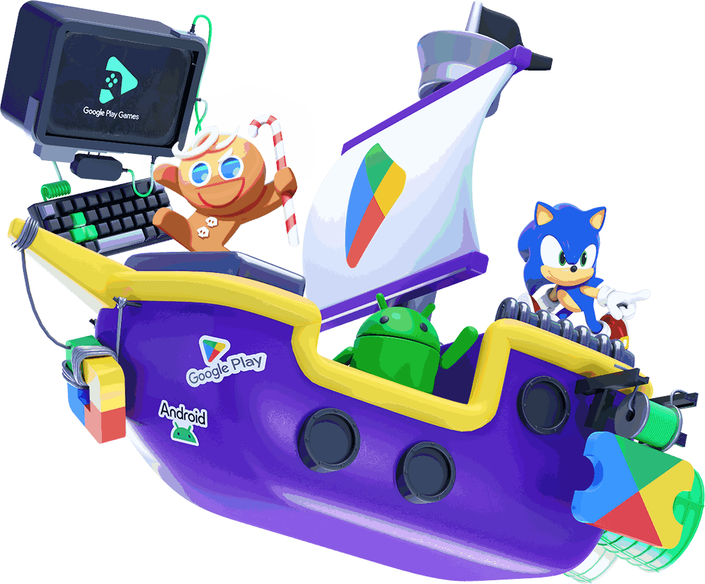
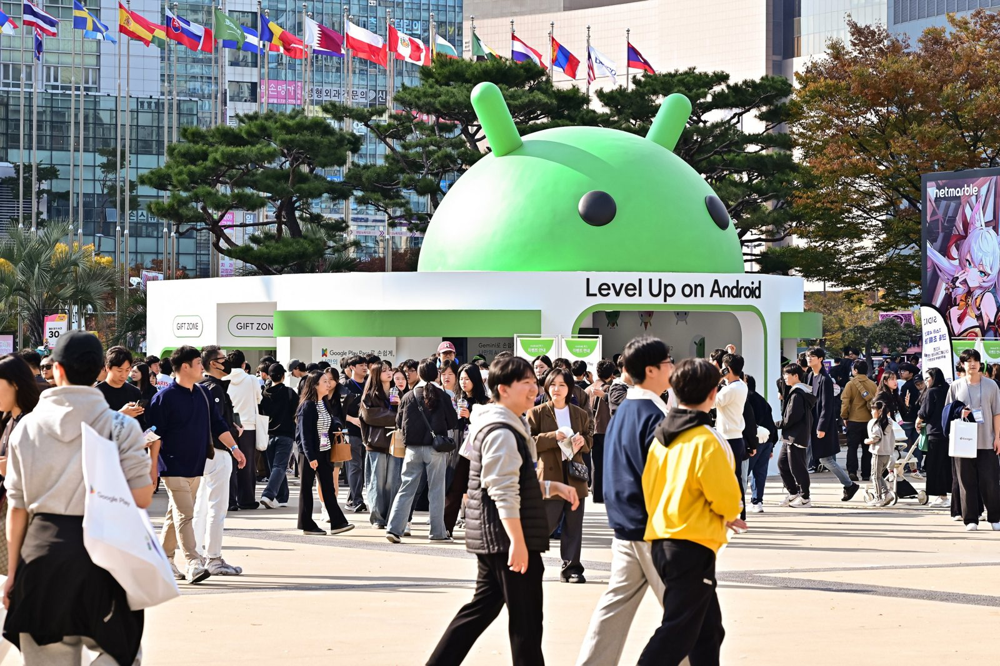
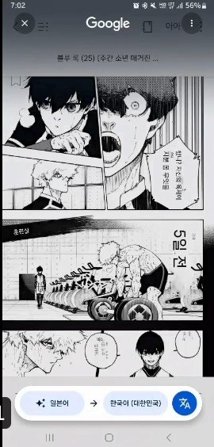
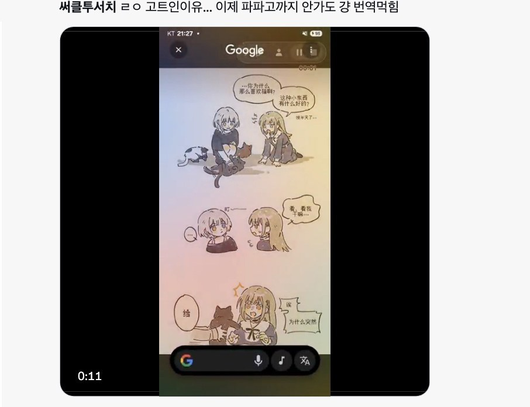
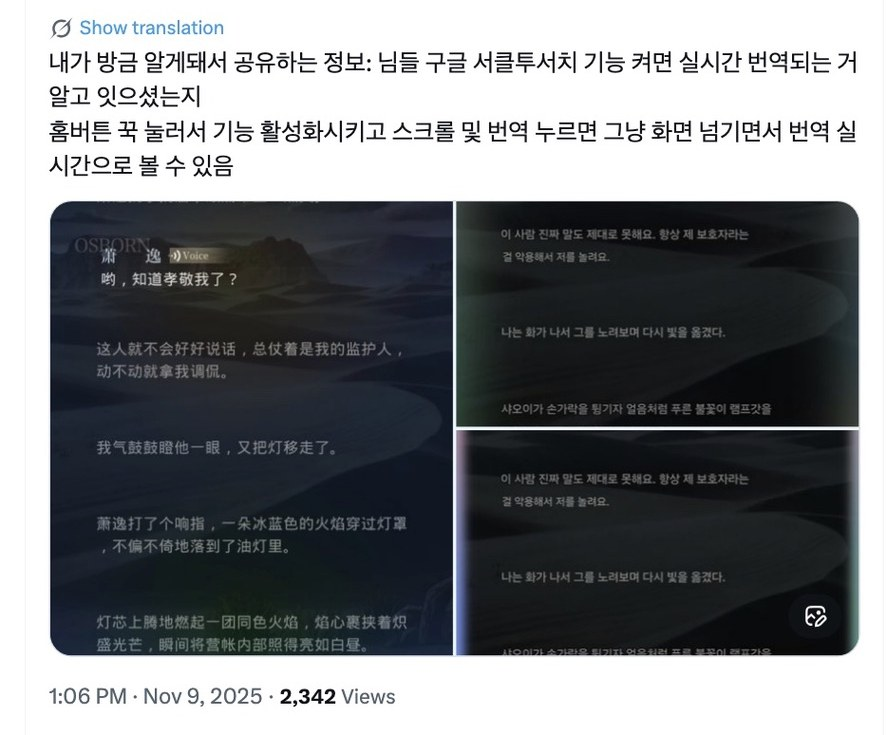
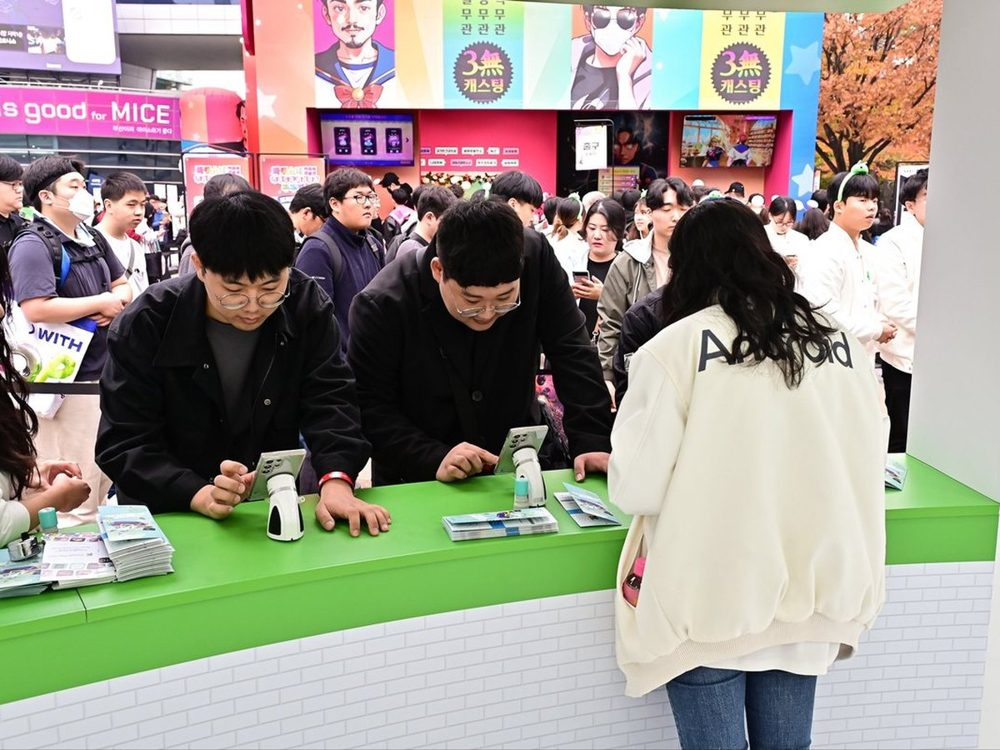
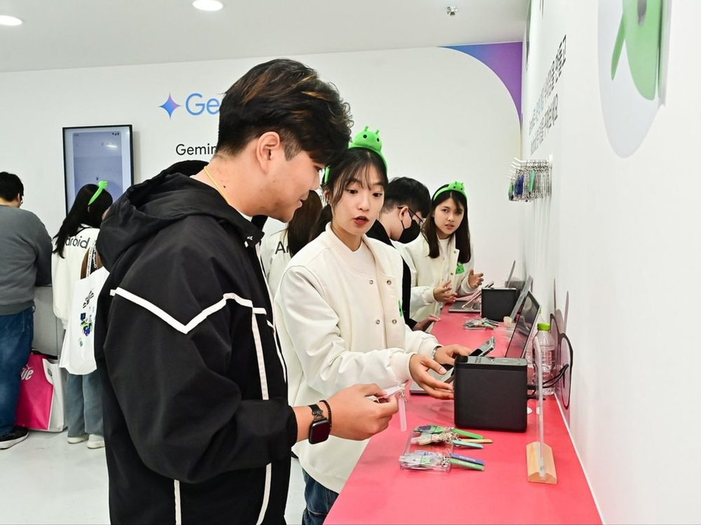
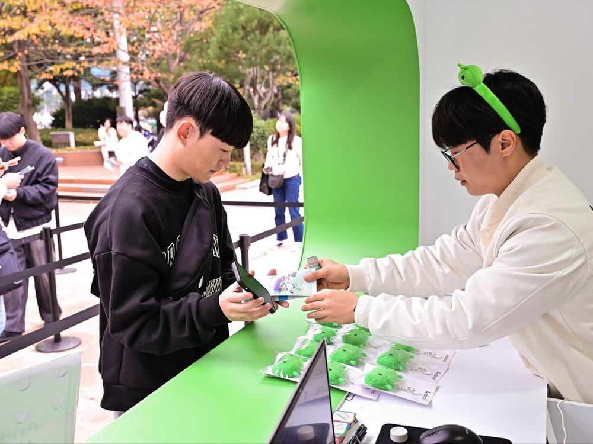
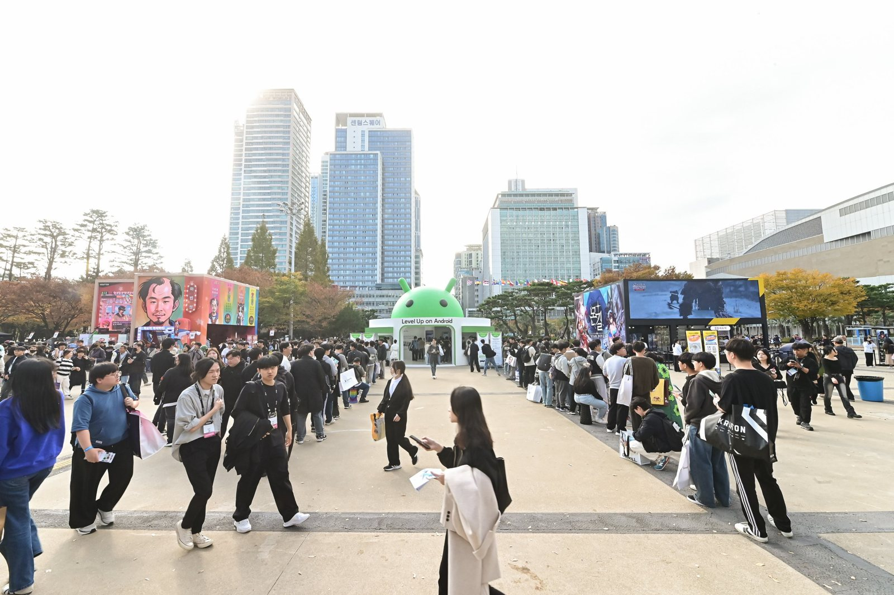

<title>Dakyung Lee — UXR</title>
<meta name="description" content="UX Research portfolio: mixed-method studies that changed product decisions.">
<link rel="preconnect" href="https://fonts.googleapis.com">
<link rel="preconnect" href="https://fonts.gstatic.com" crossorigin>
<link rel="stylesheet" href="https://fonts.googleapis.com/css2?family=Inter:wght@400;500;600;700&display=swap">
<style>
:root{
  --paper:#F7F6F2; --paper-2:#EEEDEA; --ink:#1A1C1E; --ink-2:#4B5058; --line:#DFE0DA;
  --mark:#B7D2F6; --acc:#2E6CE8; --surf:#EBEBEA; --stage:#0B0C0E;
  --font:-apple-system,BlinkMacSystemFont,'Inter',system-ui,'Segoe UI',sans-serif;
  --t-label:.875rem; --t-sm:.95rem; --t-base:1.0625rem; --t-body:1.125rem;
  --t-lead:clamp(1.0625rem,1.6vw,1.3rem);
  --d-xl:clamp(2.6rem,5.8vw,5rem); --d-case:clamp(2.4rem,4.4vw,4rem); --d-l:clamp(2rem,4vw,2.85rem);
  --d-m:clamp(1.5rem,3vw,2.25rem); --d-s:clamp(1.2rem,2vw,1.5rem);
  --d-num:clamp(3.25rem,6vw,6.5rem); --d-num-s:clamp(2.25rem,4vw,3.75rem);
  --sec-pad:clamp(2.5rem,5vw,3.75rem); --sec-gap:clamp(1.75rem,3.5vw,2.5rem);
  --sp-block:clamp(2.25rem,5vw,3.25rem); --sp-el:1.4rem;
  --tr-m:-0.02em; --measure:62ch; --r:20px; --tint:color-mix(in srgb,var(--ink) 5.5%,transparent);
}
@media (prefers-color-scheme:dark){:root:not([data-theme="light"]){
  --paper:#101214; --paper-2:#191C20; --ink:#F0F1EC; --ink-2:#B8BDC3; --line:#2C3036;
  --mark:rgba(133,171,255,.30); --acc:#85ABFF; --surf:#1E2226; --stage:#060708; color-scheme:dark;
}}
:root[data-theme="dark"]{
  --paper:#101214; --paper-2:#191C20; --ink:#F0F1EC; --ink-2:#B8BDC3; --line:#2C3036;
  --mark:rgba(133,171,255,.30); --acc:#85ABFF; --surf:#1E2226; --stage:#060708; color-scheme:dark;
}
*{box-sizing:border-box}
html{scroll-behavior:smooth;scroll-padding-top:4.5rem;overflow-x:clip}
body{margin:0;background:var(--paper);color:var(--ink);font-family:var(--font);
  font-size:var(--t-body);line-height:1.75;padding-inline:clamp(16px,4vw,40px);padding-block:0 3rem;
  -webkit-font-smoothing:antialiased}
.wrap{max-width:1120px;margin-inline:auto}
a{color:inherit}
a:focus-visible,button:focus-visible{outline:3px solid var(--acc);outline-offset:3px;border-radius:4px}
h1,h2,h3,h4{font-family:var(--font);font-weight:700;margin:0;letter-spacing:-.02em;text-wrap:balance}
p{margin:0}
.mono{font-size:.8125rem;font-weight:700;letter-spacing:.06em;text-transform:uppercase}
mark{background:var(--mark);color:inherit;padding:0 .06em;-webkit-box-decoration-break:clone;box-decoration-break:clone}

/* nav */
.nav{position:sticky;top:env(safe-area-inset-top,0px);z-index:10;background:var(--paper);
  border-bottom:1px solid transparent;transition:border-color .25s;
  margin-inline:calc(-1*clamp(16px,4vw,40px));padding-inline:clamp(16px,4vw,40px)}
.nav.scrolled{border-bottom-color:var(--line)}
.nav .wrap{display:flex;flex-wrap:wrap;align-items:center;justify-content:space-between;gap:.25rem 1.5rem;padding-block:.75rem}
.brand{font-weight:600;text-decoration:none;font-size:1rem}
.brand span{color:var(--ink-2);font-weight:500;margin-left:.5rem}
.nav ul{display:flex;flex-wrap:wrap;gap:.25rem 1.25rem;list-style:none;margin:0;padding:0;font-size:.95rem}
.nav ul a{text-decoration:none;padding-block:.15rem}
.nav ul a:hover,.nav ul a.on{text-decoration:underline;text-decoration-thickness:.08em;text-underline-offset:.2em}
@media(max-width:560px){.nav ul{gap:.25rem .85rem;font-size:.85rem}}

/* hero */
.hero{display:grid;align-content:center;padding-block:clamp(2.5rem,7vw,5rem) clamp(1rem,2vw,1.5rem)}
.hero .eyebrow{color:var(--ink-2);margin-bottom:1rem}
.hero h1{font-size:clamp(2.1rem,4.6vw,3.9rem);line-height:1.1;letter-spacing:-.03em;max-width:24ch;margin-bottom:1.5rem}
.hero .lede{max-width:var(--measure);font-size:var(--t-lead);color:var(--ink-2);line-height:1.35}
.hero .lede strong{color:var(--ink);font-weight:600}
.hero .meta{display:grid;gap:.1rem;line-height:1.4;color:var(--ink-2);font-size:var(--t-label);margin-top:2rem}
.hero .meta p{display:grid;grid-template-columns:6rem minmax(0,1fr);gap:1rem}
.hero .meta .mk{font-size:.75rem;font-weight:400;letter-spacing:.08em;text-transform:uppercase;opacity:.7;padding-top:.15rem}
@media(max-width:560px){.hero .meta p{grid-template-columns:1fr;gap:0}}
.niche-map{list-style:none;margin:0;padding:0;display:flex;flex-wrap:wrap;align-items:center;gap:1rem 1.1rem}
.niche-map li{display:flex;align-items:center;gap:1.1rem}
.niche-map li+li::before{content:'';flex:none;width:1px;height:2.75rem;background:var(--ink-2);opacity:.28}
.niche-map a{display:grid;gap:.3rem;text-decoration:none}
.niche-map .mono{color:var(--ink-2);font-size:.75rem}
.niche-map b{font-size:1.375rem;font-weight:600;letter-spacing:-.015em;line-height:1.25}
.niche-map a:hover b{text-decoration:underline;text-underline-offset:.2em;text-decoration-thickness:.08em}
@media(max-width:720px){.niche-map b{font-size:1.25rem}.niche-map{flex-direction:column;align-items:flex-start;gap:1.25rem}.niche-map li{flex-direction:column;align-items:flex-start;gap:.75rem}.niche-map li+li::before{display:none}}

/* selected tiles */
section.block{padding-block:calc(var(--sec-pad)*2) calc(var(--sec-pad)*1.5)}
.sec-head{display:flex;flex-wrap:wrap;align-items:baseline;justify-content:space-between;gap:.25rem 1rem;
  margin-bottom:2rem}
.sec-head h2{font-size:var(--d-l);line-height:1.08;letter-spacing:-.025em}
.sec-note{font-size:var(--t-sm);color:var(--ink-2)}
.sec-intro{color:var(--ink-2);max-width:64ch;margin-bottom:3rem;font-size:var(--t-base);line-height:1.6}
.sec-intro strong{color:var(--ink);font-weight:600}
.index{display:grid;grid-template-columns:repeat(2,minmax(0,1fr));gap:28px}
.tile{display:grid;gap:.65rem;align-content:start;text-decoration:none;color:inherit}
.tile .thumb{aspect-ratio:4/3;border-radius:var(--r);overflow:hidden;background:var(--stage)}
.tile .thumb img{width:100%;height:100%;object-fit:cover;display:block;transition:transform .35s ease}
.tile:hover .thumb img,.tile:focus-visible .thumb img{transform:scale(1.04)}
.tile .thumb.plot{background:var(--paper-2);padding:clamp(.6rem,1.8vw,1.1rem)}
.tile .thumb svg{width:100%;height:100%;display:block}
.thumb .zone{fill:var(--mark);opacity:.5}
.thumb .axis{stroke:var(--line);stroke-width:1.5}
.thumb .parity{stroke:var(--ink-2);stroke-width:1.5;stroke-dasharray:6 6;opacity:.6}
.thumb .dot{fill:var(--ink-2)}
.thumb .hi .dot{fill:var(--acc)}
.tile .mono{color:var(--ink-2)}
.tile h3{font-size:var(--t-lead);line-height:1.25;letter-spacing:-.015em;font-weight:600}
.tile p{color:var(--ink-2);font-size:var(--t-base)}
.tile h3{font-size:var(--t-lead);font-weight:600}
.tile .thumb{aspect-ratio:3/2}
.tile .mono{font-weight:400}
.tile .thumb{margin-bottom:1.1rem}
.tile .go{margin-top:.1rem;justify-self:start;font-size:1.25rem;font-weight:300;line-height:1;color:var(--ink-2);transition:color .2s}
.tile:hover .go,.tile:focus-visible .go{color:var(--ink)}
.sr{position:absolute;width:1px;height:1px;overflow:hidden;clip:rect(0 0 0 0);white-space:nowrap}
.tile .go i{font-style:normal;transition:transform .2s}
.tile:hover .go i,.tile:focus-visible .go i{transform:translateX(4px)}
.tile .kpi{display:flex;flex-wrap:wrap;gap:.3rem 1.5rem;margin-top:.35rem}
.tile .kpi b{font-size:1.4rem;letter-spacing:-.02em;font-variant-numeric:tabular-nums}
.tile .kpi span{color:var(--ink-2);font-size:var(--t-sm);display:block}
.tile:hover h3{text-decoration:underline;text-decoration-thickness:.08em;text-underline-offset:.2em}
@media(max-width:760px){.index{grid-template-columns:1fr}}

/* case */
.case{border-top:1px solid var(--line);padding-block:var(--sec-pad) 0}
.case-hero{display:grid;gap:1rem}
.case-hero.has-art{grid-template-columns:minmax(0,1.05fr) minmax(0,.95fr);gap:clamp(2rem,5vw,4rem);align-items:center}
.ch-copy{display:grid;gap:1rem;align-content:center}
.case-hero.has-art .ch-meta{grid-column:1/-1}
.ch-art img{width:100%;height:auto;display:block}
@media(max-width:860px){.case-hero.has-art{grid-template-columns:1fr}.ch-art{order:-1;max-width:420px}}
.ch-eyebrow{color:var(--ink-2);font-weight:600;font-size:var(--t-base)}
.case+.case{margin-top:clamp(5rem,11vw,8.5rem);padding-top:clamp(2.75rem,6vw,4.25rem);border-top:1px solid var(--line)}
.case-no{display:flex;align-items:baseline;gap:.6rem;margin:0 0 1.5rem;font:600 .76rem/1 var(--mono,ui-monospace,monospace);letter-spacing:.16em;text-transform:uppercase;color:var(--ink-2)}
.case-no b{font-size:2.1rem;font-weight:700;letter-spacing:-.03em;color:var(--ink);font-family:inherit;line-height:.9}
.ch-title{font-size:var(--d-case);line-height:.95;letter-spacing:-.045em;max-width:18ch}
.ch-sub{font-size:var(--t-lead);color:var(--ink-2);max-width:40ch;line-height:1.25}
.ch-meta{margin-top:1.75rem;margin-bottom:2.5rem;display:grid;gap:1.1rem}
.cmeta{display:block;margin:0;max-width:none}
@media(min-width:900px){.cmeta dd{white-space:nowrap}}
.cmeta>div{display:grid;grid-template-columns:5rem minmax(0,1fr);gap:1rem;align-items:baseline;padding-block:.1rem}
.cmeta dt{font-size:.75rem;font-weight:400;text-transform:uppercase;letter-spacing:.08em;color:var(--ink-2);opacity:.8}
.cmeta dd{margin:0;font-size:.875rem;line-height:1.4;color:var(--ink-2)}
@media(max-width:480px){.cmeta>div{grid-template-columns:1fr;gap:.15rem}}
.ch-meta .tags{display:flex;flex-wrap:wrap;gap:.2rem .65rem;list-style:none;margin:0;padding:0;font-size:var(--t-label);
  text-transform:uppercase;letter-spacing:.06em;color:var(--ink-2)}
.ch-meta .tags li{display:flex;align-items:center;gap:.65rem}
.ch-meta .tags li+li::before{content:"·";opacity:.5}
.ch-meta .tags li:first-child{color:var(--acc);font-weight:600}
.role-line{font-size:var(--t-sm);color:var(--ink-2);line-height:1.55;margin:0;max-width:var(--measure)}
.role-line strong{color:var(--ink);font-weight:600}

/* G-STAR — black skin (Android Black 900 + Lime), scoped to this case only */
#gstar{
  --paper:#202124; --paper-2:#2B2E31; --ink:#FFFFFF; --ink-2:rgba(255,255,255,.74);
  --line:rgba(255,255,255,.18); --acc:#C6FF00; --mark:rgba(198,255,0,.20);
  --tint:rgba(255,255,255,.06);
  background:var(--paper); color:var(--ink); border-top:none;
  margin-inline:calc(50% - 50vw);
  padding-inline:calc(50vw - 50% + clamp(16px,4vw,40px));
  padding-block:calc(var(--sec-pad)*1.25);
}
/* Lime stays reserved for key numerals and the rank-1 numeral */
#gstar .kr-grid b{color:var(--acc)}
#gstar .kr-grid>div+div b{color:var(--ink-2)}
#gstar .m-list span{border-color:rgba(255,255,255,.45)}

/* signal strip — the at-a-glance JD proof: methods + decision */
.signal{display:grid;grid-template-columns:1.1fr 1fr;gap:1.25rem clamp(2rem,5vw,4rem);
  margin-top:var(--sec-gap)}
.signal>div{display:grid;gap:.55rem;align-content:start}
.signal .mono{color:var(--ink-2)}
.signal p{font-size:var(--t-base);line-height:1.5}
.signal .m-list{display:flex;flex-wrap:wrap;gap:.4rem .5rem}
.signal .m-list span{border:1px solid var(--ink);border-radius:999px;padding:.25rem .8rem;font-size:var(--t-sm);color:var(--ink)}
@media(max-width:700px){.signal{grid-template-columns:1fr;gap:1.25rem}}

/* stakes — the so-what, high in the case where scanning happens */
.stakes{margin-top:var(--sec-gap);max-width:var(--measure);display:grid;gap:.55rem}
.stakes .mono{color:var(--ink-2)}
.stakes>p{font-size:var(--d-s);line-height:1.3;font-weight:600;letter-spacing:-.02em}
.stakes>p.q{font-size:var(--t-base);line-height:1.6;color:var(--ink-2);font-weight:400;letter-spacing:0}

/* impact block — key results paired with the brief (PM pattern) */
.ps{display:grid;gap:clamp(1.5rem,5svh,3rem);margin-top:var(--sec-gap);
  min-height:calc(100svh - 7rem);align-content:center;padding-block:clamp(1rem,3svh,2.5rem)}
.ps-result{padding:clamp(1.25rem,2.5vw,1.75rem) 0 0;border-top:2px solid var(--acc);display:grid;gap:.75rem}
.ps-result .mono{color:var(--acc)}
.ps-result b{font-size:clamp(2.4rem,7vw,5.25rem);line-height:1;letter-spacing:-.04em;color:var(--ink);font-variant-numeric:tabular-nums}
.ps-result p{font-size:var(--t-base);line-height:1.5;color:var(--ink-2);max-width:30ch;margin:0}
.ps-r-grid{display:grid;grid-template-columns:auto auto;justify-content:start;gap:1.25rem clamp(2.5rem,6vw,5.5rem);align-items:baseline}
.ps-r-grid>div{display:grid;gap:.35rem;align-content:start}
.ps-r-grid>div+div{padding-left:clamp(1.5rem,3vw,2.5rem);border-left:1px solid var(--line)}
.ps-r-grid>div+div b{font-size:clamp(1.6rem,3vw,2.4rem);color:var(--ink-2);letter-spacing:-.02em}
.ps-r-grid>div+div p{font-size:var(--t-sm)}
.ps-r-note{color:var(--ink-2);font-size:var(--t-sm);line-height:1.55;max-width:70ch}
.ps-context{background:var(--tint);border-radius:var(--r);padding:clamp(1.75rem,3.5vw,2.5rem);display:grid;gap:clamp(1.5rem,3vw,2rem)}
.ps-framing{display:grid;gap:.55rem}
.ps-label{color:var(--ink-2);display:block}
.ps-title{font-size:var(--d-s);line-height:1.2;letter-spacing:-.015em;max-width:64ch;text-wrap:balance}
.ps-brief{list-style:none;margin:0;padding:0;display:grid;grid-template-columns:repeat(3,minmax(0,1fr));gap:1.5rem 2.5rem}
.ps-brief li{display:grid;gap:.35rem;align-content:start}
.ps-brief .mono{color:var(--ink-2)}
.ps-brief b{font-size:var(--t-base);line-height:1.35;font-weight:600;color:var(--ink)}
.ps-brief p{font-size:var(--t-sm);line-height:1.55;color:var(--ink-2);margin:0}
.ps-brief strong{color:var(--ink);font-weight:600}
@media(max-width:760px){.ps-brief{grid-template-columns:1fr}.ps-r-grid{grid-template-columns:1fr}.ps-r-grid>div+div{padding-left:0;border-left:none}}

/* key results */
.kr{display:grid;gap:1.25rem;margin-top:var(--sec-gap)}
.kr .mono{color:var(--ink-2)}
.kr-grid{display:flex;flex-wrap:wrap;gap:1.5rem clamp(2.5rem,6vw,5rem);align-items:baseline}
.kr-grid>div{display:grid;gap:.3rem}
.kr-grid b{font-size:var(--d-num);font-weight:300;line-height:.95;letter-spacing:-.06em;font-variant-numeric:tabular-nums}
.kr-grid>div+div b{font-size:var(--d-num-s);color:var(--ink-2)}
.kr-grid p{color:var(--ink-2);font-size:var(--t-sm);max-width:26ch}
.kr-note{color:var(--ink-2);font-size:var(--t-sm);line-height:1.55;max-width:64ch}
.kr-note strong{color:var(--ink);font-weight:600}

/* method strip */
.howblock{margin-top:var(--sec-gap);display:grid;gap:1.25rem}
.how-dec{font-size:var(--t-base);line-height:1.55;max-width:var(--measure);display:grid;gap:.3rem}
.how-dec .mono{color:var(--ink-2)}
.method{display:grid;grid-template-columns:repeat(auto-fit,minmax(200px,1fr));gap:1.5rem 2.5rem;
  margin-top:0;list-style:none;padding-left:0}
.method li{display:grid;gap:.35rem;align-content:start}
.method .mono,.ps-brief .mono,.jcard .jl,.xp-grid .mono{text-transform:none;letter-spacing:0;font-weight:600;font-size:var(--t-sm);color:var(--ink-2)}
.method b{font-size:var(--t-base);font-weight:600}
.method p{font-size:var(--t-sm);color:var(--ink-2);line-height:1.55}
@media(max-width:700px){.method{grid-template-columns:1fr}}

/* thread */
.thread{margin-top:calc(var(--sec-pad)*1.5)}
.th-eyebrow{color:var(--ink-2);display:flex;align-items:center;gap:1rem;margin-bottom:1.7rem;line-height:1.4}
.th-eyebrow::after{content:"";flex:1;height:1px;background:var(--line)}
.th-q::before{content:"Question";display:block;margin-bottom:.8rem;font:400 var(--t-sm)/1.4 var(--mono,ui-monospace,monospace);color:var(--ink-2);letter-spacing:0}
.ex{margin:0;display:grid;grid-template-columns:minmax(0,.7fr) minmax(0,1.5fr) minmax(0,1.3fr);grid-template-rows:auto auto;gap:1.25rem;align-items:start}
.ex figure{margin:0;display:grid;grid-template-rows:subgrid;grid-row:span 2}
.ex img{display:block;width:100%;height:auto;border-radius:8px;align-self:end}
.ex figcaption{margin-top:.6rem;font-size:var(--t-sm);line-height:1.45;color:var(--ink-2)}
.ex figcaption strong{display:block;color:var(--ink-2);font-weight:500;font-size:.85em;margin-bottom:.1rem}
@media(max-width:700px){.ex{grid-template-columns:1fr}.ex figure:first-child{max-width:13rem}}
.th-q.nolabel::before,.ans.nolabel::before{display:none}
.why-q{max-width:min(100%,50rem);margin-top:var(--sp-el);font-size:var(--t-body);line-height:1.42;color:var(--ink-2)}
.why-q strong{color:var(--ink);font-weight:600}
.why-q+.ans{margin-top:2rem}
.ans{max-width:34ch;font-size:clamp(1.3rem,2.6vw,1.75rem);line-height:1.3;letter-spacing:-.01em;font-weight:500;color:var(--ink)}
.ans strong{font-weight:700}
.photo.gs>figcaption{margin-top:0;margin-bottom:1.3rem}
.ans-detail{max-width:var(--measure);margin-top:1.1rem;font-size:var(--t-sm);line-height:1.5;color:var(--ink-2)}
.plan{width:100%;height:auto;display:block}
.plan .pl-fill{fill:color-mix(in srgb,var(--ink) 4%,transparent)}
.plan .pl-zone{fill:color-mix(in srgb,var(--ink) 9%,transparent);stroke:var(--line);stroke-width:1}
.plan .pl-line{fill:none;stroke:var(--line);stroke-width:1.4}
.plan .pl-accf{fill:color-mix(in srgb,#3ddc84 16%,transparent);stroke:#3ddc84;stroke-width:1.4}
.plan .pl-acc{fill:#3ddc84}
.plan .pl-badge{fill:var(--ink)}
.plan .pl-lbl{fill:var(--ink);font:600 17px/1 inherit}
.plan .pl-sub{fill:var(--ink-2);font:400 13.5px/1 inherit}
.plan .pl-num{fill:#0b1a12;font:700 13px/1 inherit}
.plan .pl-bnum{fill:var(--paper);font:700 13px/1 inherit}
.buzz{max-width:56rem;border:1px solid var(--line);border-radius:14px;padding:clamp(1.25rem,3vw,1.9rem)}
.buzz-nums{display:grid;grid-template-columns:repeat(2,minmax(0,1fr));gap:clamp(1rem,3vw,2.5rem)}
.buzz-bar{display:flex;height:36px;margin-top:1.7rem;border-radius:8px;overflow:hidden;background:color-mix(in srgb,var(--ink) 8%,transparent)}
.buzz-bar i{display:grid;place-items:center;font-style:normal;min-width:0}
.buzz-bar .s-pos{background:#3ddc84;color:#0b1a12;font-weight:700;font-size:.85rem;letter-spacing:.01em}
.buzz-bar .s-neg{background:color-mix(in srgb,var(--ink) 36%,transparent)}
.buzz-bar .s-neu{background:color-mix(in srgb,var(--ink) 16%,transparent)}
.photo.sm{max-width:46rem}
.chart{position:relative}
.chart .chart-cap{max-width:none}
.chart .cap-meta{max-width:none}
.ctip{position:absolute;transform:translate(-50%,calc(-100% - 14px));pointer-events:none;z-index:5;background:#15161a;border:1px solid var(--line);border-radius:10px;padding:.6rem .8rem;display:grid;gap:.1rem;font-size:.82rem;line-height:1.4;color:var(--ink-2);white-space:nowrap;box-shadow:0 12px 28px -14px rgba(0,0,0,.8)}
.ctip b{color:#fff;font-size:.92rem;margin-bottom:.15rem}
.ctip .up{color:#3ddc84}
.chart .pt{cursor:pointer}
.chart .pt circle{transition:opacity .12s ease}
.chart.dim .pt{opacity:.28}
.chart.dim .pt.on{opacity:1}
.chart .pt.on circle{r:7.5}
.chart .pt:focus{outline:none}
.chart .pt:focus-visible circle{stroke:#fff;stroke-width:2}
.qav svg{width:1.05rem;height:1.05rem;display:block}
.uc-row{display:grid;grid-template-columns:minmax(0,224px) minmax(0,1fr);gap:clamp(1.5rem,4vw,2.5rem);margin-top:.3rem;max-width:46rem;align-items:center}
.uc-row .uc{display:contents}
.uc-row .uc figcaption{align-self:center}
.uc{margin:0;display:grid;gap:1rem;justify-items:center;align-content:start}
.uc .gs-phone{max-width:200px}
.uc-tag{display:block;margin-bottom:.45rem;font:600 .64rem/1 var(--mono,ui-monospace,monospace);letter-spacing:.11em;text-transform:uppercase;color:#3ddc84}
.uc-more{list-style:none;margin:var(--sp-el) 0 0;padding:0;display:grid;max-width:min(100%,50rem)}
.uc-more li{display:grid;grid-template-columns:minmax(0,11rem) minmax(0,1fr);gap:.2rem 1.5rem;padding:.85rem 0;border-top:1px solid var(--line);font-size:var(--t-sm);line-height:1.45;color:var(--ink-2)}
.uc-more b{color:var(--ink);font-weight:650}
@media(max-width:620px){.uc-more li{grid-template-columns:1fr}}
.uc-vid{width:100%;max-width:224px;background:none;border:0;border-radius:0;overflow:hidden}
.ev2{display:grid;grid-template-columns:minmax(0,1.05fr) minmax(0,.95fr);gap:clamp(1.5rem,3vw,2.75rem);margin-top:var(--sp-block);align-items:start}
.ev2>.evi{margin-top:0}
.ev2 .buzz{max-width:none}
.ev2 .uc-row{grid-template-columns:minmax(0,160px) minmax(0,1fr);gap:1.25rem;max-width:none}
.ev2 .uc-more{max-width:none}
.ev2 .uc-more li{grid-template-columns:minmax(0,9rem) minmax(0,1fr)}
@media(max-width:960px){.ev2{grid-template-columns:1fr}.ev2>.evi+.evi{margin-top:var(--sp-block)}}
.uc-vid video{width:100%;height:auto;display:block}
.uc figcaption{font-size:var(--t-sm);line-height:1.45;color:var(--ink-2);width:100%}
.uc figcaption b{display:block;color:var(--ink);font-size:var(--t-body);font-weight:650;margin-bottom:.3rem}
.uc-bar{text-align:center;font:600 .6rem/1 var(--mono,ui-monospace,monospace);letter-spacing:.09em;text-transform:uppercase;color:#5f6368;padding:.1rem 0 .15rem}
.uc-toon{display:grid;gap:.3rem}
.uc-panel{background:#eceff3;border-radius:6px;min-height:50px;padding:.4rem;display:flex;align-items:flex-start}
.uc-bub{background:#fff;border:1px solid #d7dbe0;border-radius:8px;padding:.22rem .38rem;font-size:.58rem;color:#141414;line-height:1.3}
.uc-pill{text-align:center;margin-top:.15rem}
.uc-pill span{display:inline-block;background:#1a73e8;color:#fff;border-radius:99px;padding:.2rem .6rem;font-size:.56rem;font-weight:600}
.uc-say{margin:.25rem 0 0;font-size:.62rem;color:#141414;background:#eceff3;border-radius:10px;padding:.45rem .55rem;line-height:1.35}
.uc-card{margin-top:.45rem;border:1px solid #d7dbe0;border-radius:10px;padding:.5rem;display:grid;gap:.1rem}
.uc-card b{font-size:.55rem;color:#1a73e8;letter-spacing:.05em;text-transform:uppercase}
.uc-card span{font-size:.62rem;color:#141414}
.uc-done{margin:.45rem 0 0;font-size:.55rem;color:#5f6368}
.uc-cam{position:relative;aspect-ratio:3/4;border-radius:10px;background:linear-gradient(160deg,#2b2f3a,#5a6170);display:grid;place-items:center;overflow:hidden}
.uc-obj{width:44%;aspect-ratio:1/1;border-radius:50% 50% 46% 46%;background:linear-gradient(180deg,#c98b5a,#8a5533);box-shadow:0 6px 16px -6px rgba(0,0,0,.6)}
.uc-q{position:absolute;bottom:.4rem;left:.4rem;right:.4rem;background:rgba(255,255,255,.95);border-radius:99px;padding:.24rem .5rem;font-size:.58rem;color:#141414;text-align:center}
.uc-ans{margin:.45rem 0 0;font-size:.6rem;color:#141414;line-height:1.35}
@media(max-width:760px){.uc-row{grid-template-columns:1fr;justify-items:center}.uc figcaption{max-width:24rem}}
.vbars{list-style:none;margin:1.5rem 0 0;padding:0;display:grid;gap:.45rem}
.vbars li{display:grid;grid-template-columns:minmax(0,13rem) minmax(0,1fr) 2.2rem;align-items:center;gap:.9rem;font-size:var(--t-sm);color:var(--ink-2)}
.vbars .vn{color:var(--ink)}
.vbars .vb{height:9px;border-radius:99px;background:color-mix(in srgb,var(--ink) 9%,transparent);overflow:hidden}
.vbars .vb i{display:block;height:100%;border-radius:99px;background:color-mix(in srgb,var(--ink) 34%,transparent)}
.vbars li.lead .vb i{background:#3ddc84}
.vbars .vc{text-align:right;font-variant-numeric:tabular-nums}
@media(max-width:620px){.vbars li{grid-template-columns:minmax(0,9rem) minmax(0,1fr) 2rem;gap:.6rem}}
.bio-lead{font-size:clamp(1.25rem,2.3vw,1.7rem);line-height:1.3;letter-spacing:-.015em;font-weight:650;color:var(--ink);margin:0 0 1.3rem;max-width:24ch}
.rounds{display:grid;grid-template-columns:minmax(0,6.5rem) minmax(0,1fr);gap:0;margin:1.5rem 0 0;max-width:min(100%,50rem);font-size:var(--t-sm);line-height:1.45;color:var(--ink-2)}
.rounds dt{color:var(--ink);font-weight:600;padding:.62rem 1.5rem .62rem 0;border-top:1px solid var(--line)}
.rounds dd{margin:0;padding:.62rem 0;border-top:1px solid var(--line)}
@media(max-width:620px){.rounds{grid-template-columns:1fr}.rounds dt{padding-bottom:.1rem}.rounds dd{padding-top:.1rem;border-top:0}}
.dfine{margin-top:var(--sp-block);max-width:56rem}
.dfine>.mono{display:block;margin:0 0 .9rem;font:400 var(--t-sm)/1.4 var(--mono,ui-monospace,monospace);color:var(--ink-2);letter-spacing:0;text-transform:none}
.dfine dl{display:grid;grid-template-columns:minmax(0,9.5rem) minmax(0,1fr);gap:0;margin:0;font-size:var(--t-sm);line-height:1.45;color:var(--ink-2)}
.dfine dt{color:var(--ink);font-weight:600;padding:.62rem 1.5rem .62rem 0;border-top:1px solid var(--line)}
.dfine dd{margin:0;padding:.62rem 0;border-top:1px solid var(--line)}
@media(max-width:620px){.dfine dl{grid-template-columns:1fr}.dfine dt{padding-bottom:.1rem}.dfine dd{padding-top:.1rem;border-top:0}}
.quotes{list-style:none;margin:1.6rem 0 0;padding:0;display:grid;gap:1.15rem}
.quotes li{display:grid;grid-template-columns:2.3rem minmax(0,1fr);gap:1rem;padding-top:1.2rem;border-top:1px solid var(--line)}
.qav{width:2.3rem;height:2.3rem;border-radius:50%;display:grid;place-items:center;background:color-mix(in srgb,var(--ink) 10%,transparent);border:1px solid var(--line);font-size:.8rem;font-weight:700;color:var(--ink-2);line-height:1}
.quotes p{margin:0;font-size:var(--t-body);line-height:1.45;color:var(--ink)}
.quotes li.crit p{color:var(--ink-2)}
.quotes li[hidden]{display:none}
.quotes .qm{display:block;margin-top:.45rem;font-size:var(--t-sm);color:var(--ink-2)}
.qnote{margin:1.1rem 0 0;font-size:var(--t-sm);line-height:1.35;color:var(--ink-2)}
.buzz-key{list-style:none;display:flex;flex-wrap:wrap;gap:.4rem 1.6rem;margin:.8rem 0 0;padding:0;font-size:var(--t-sm);color:var(--ink-2)}
.buzz-key li{display:flex;align-items:center;gap:.45rem}
.sw{width:10px;height:10px;border-radius:3px;display:inline-block;flex:0 0 auto}
.sw.pos{background:#3ddc84}
.sw.neg{background:color-mix(in srgb,var(--ink) 36%,transparent)}
.sw.neu{background:color-mix(in srgb,var(--ink) 16%,transparent)}
.ans .ans-sub{display:block;margin-top:.6rem;font-size:var(--t-sm);font-weight:400;line-height:1.45;letter-spacing:0;color:var(--ink-2)}
.rhead{margin-top:clamp(4rem,9vw,6.5rem);padding-top:1.2rem;margin-bottom:.4rem;border-top:2px solid var(--ink);max-width:var(--measure);font:600 var(--t-sm)/1.2 var(--mono,ui-monospace,monospace);letter-spacing:.09em;text-transform:uppercase;color:var(--ink)}
.mstep{margin-top:var(--sp-block);padding-top:1.7rem;border-top:1px solid var(--line)}
.rhead+.mstep{border-top:0;padding-top:0;margin-top:1.9rem}
.mstep-h{display:block;max-width:var(--measure);margin:0}
.mstep-n{display:block;margin:0 0 .8rem;font:400 var(--t-sm)/1.4 var(--mono,ui-monospace,monospace);letter-spacing:0;text-transform:none;color:var(--ink-2)}
.mstep-h b{font-size:var(--t-body);font-weight:650;letter-spacing:-.01em;color:var(--ink)}
.mstep-why,.mstep-out{max-width:min(100%,50rem);margin-top:.6rem;font-size:var(--t-sm);line-height:1.42;color:var(--ink-2)}

.mstep .mstep-body{margin-top:var(--sp-el)}
.ans::before{display:block;margin-bottom:.8rem;font:400 var(--t-sm)/1.4 var(--mono,ui-monospace,monospace);color:var(--ink-2);letter-spacing:0;text-transform:none}

.ans::before{content:"Finding"}
.how{max-width:var(--measure);margin-top:var(--sp-el);font-size:var(--t-body);line-height:1.5;color:var(--ink-2)}
.how strong{color:var(--ink);font-weight:600}
.how-steps{counter-reset:hs;list-style:none;margin:.5rem 0 0;padding:0;display:grid;gap:.65rem;max-width:var(--measure)}
.how-steps li{position:relative;padding-left:1.6rem;line-height:1.5}
.how-steps li::before{counter-increment:hs;content:counter(hs);position:absolute;left:0;top:.05em;font:700 .8rem/1.5 var(--mono,ui-monospace,monospace);color:var(--ink-2)}
.how-steps b{color:var(--ink);font-weight:600}
.fine{max-width:var(--measure);margin-top:var(--sp-el);font-size:var(--t-sm);line-height:1.35;color:var(--ink-2)}
.fine .mono{font-weight:400;margin-right:.5rem}
.closing{margin-top:calc(var(--sec-gap)*1.5);display:grid;gap:1.1rem}
.closing-row{display:grid;grid-template-columns:minmax(0,1.1fr) minmax(0,.9fr);gap:clamp(1.5rem,4vw,3rem);align-items:center}
.closing figure{margin:0}
.closing .shot{border-radius:var(--r);overflow:hidden;background:#fff}
.closing .shot img{width:100%;height:auto;display:block}
.closing figcaption{color:var(--ink-2);font-size:var(--t-sm);line-height:1.5;margin-top:.7rem}
.deco{position:relative;min-height:210px;pointer-events:none}
.deco img{position:absolute;display:block}
.deco .ring{top:4%;right:8%;width:clamp(140px,46%,240px);opacity:.45}
.deco .moon{bottom:8%;right:54%;width:clamp(56px,17%,92px);opacity:.32}
@media(max-width:860px){.closing-row{grid-template-columns:1fr}.deco{display:none}}
.th-q{font-size:clamp(2rem,3.6vw,2.95rem);line-height:1.1;letter-spacing:-.025em;max-width:28ch}
.chart-cap .cap-meta{display:block;margin-top:.55rem;opacity:.85}
.th-ctx{color:var(--ink-2);max-width:var(--measure);margin-top:.9rem;font-size:var(--t-base);line-height:1.6}
.th-ctx strong{color:var(--ink);font-weight:600}
.th-dec{margin-top:var(--sp-block);max-width:min(100%,50rem);background:none;color:var(--ink);
  border:0;padding:0;
  font-size:var(--t-body);line-height:1.42}
.th-dec .mono,.fine .mono,.how .mono,.mstep-why .mono,.mstep-out .mono,.reslab{display:block;margin:0 0 .8rem;font:400 var(--t-sm)/1.4 var(--mono,ui-monospace,monospace);color:var(--ink-2);letter-spacing:0;text-transform:none}

/* the turn */
.turn{margin-top:var(--sp-block)}
.turn>.evi{margin-top:0}
.turn-line{font-weight:700;font-size:clamp(1.75rem,3.6vw,2.9rem);line-height:1.1;letter-spacing:-.03em;
  max-width:30ch;margin:0 0 clamp(1.75rem,3.5vw,2.5rem);background:var(--paper-2);
  border-radius:0 var(--r) var(--r) 0;padding:clamp(1.25rem,3vw,2rem) clamp(1.5rem,3.2vw,2.25rem)}
.turn-pair{display:grid;grid-template-columns:1fr 1fr;gap:clamp(1.5rem,3vw,3rem)}
.turn-pair>div{display:grid;gap:.6rem;align-content:start;background:none;border:1px solid var(--line);border-radius:14px;padding:clamp(1.15rem,3vw,1.6rem)}
.turn-pair .mono{letter-spacing:.14em}
.assumed .mono,.found .mono{font-weight:400}
.assumed .mono{color:var(--ink-2)}
.assumed p{color:var(--ink-2);font-size:var(--t-base);line-height:1.6}
.found .mono{color:var(--ink-2)}
.found .mono em{font-style:normal;color:var(--ink-2);text-transform:none;letter-spacing:0;font-size:.875rem}
.found p{color:var(--ink);font-size:var(--t-body);line-height:1.6;font-weight:500}
.found strong{font-weight:700}
.turn-pair.solo{grid-template-columns:minmax(0,1fr)}
@media(max-width:700px){.turn-pair{grid-template-columns:1fr}}

/* ranking */
.evi{margin-top:var(--sp-block)}
.rank{margin:0}
.xp{display:grid;gap:clamp(1.5rem,3vw,2.25rem);margin-top:var(--sp-block)}
.xp-head{display:grid;gap:.8rem}
.xp-head>.mono{display:block;margin:0;font:400 var(--t-sm)/1.4 var(--mono,ui-monospace,monospace);color:var(--ink-2);letter-spacing:0;text-transform:none}
.xp-title{font-size:clamp(1.2rem,2vw,1.45rem);line-height:1.35;letter-spacing:-.01em;font-weight:650}
.xp-lede{color:var(--ink-2);font-size:var(--t-base);line-height:1.6;max-width:none}
.xp-body{display:grid;grid-template-columns:minmax(0,1.08fr) minmax(0,.92fr);gap:clamp(2rem,5vw,4.25rem);align-items:center}
.xp-whole{margin:0;display:grid;gap:1rem}
.xp-whole .frame{background:none;display:flex;justify-content:center}
.xp-whole img{width:92%;height:auto;display:block;margin-inline:auto}
.xp-grid{list-style:none;margin:0;padding:0;display:grid;gap:clamp(1rem,2.5vw,1.75rem);align-content:center}
.xp-grid li{display:grid;grid-template-columns:clamp(112px,16vw,180px) minmax(0,1fr);grid-template-rows:auto auto auto;column-gap:clamp(.85rem,1.8vw,1.25rem);row-gap:.2rem;align-content:start}
.xp-grid .frame{grid-column:1;grid-row:1/4;border-radius:var(--r);overflow:hidden;background:var(--tint);aspect-ratio:4/3}
.xp-grid img{width:100%;height:100%;object-fit:cover;display:block}
.xp-grid .mono{grid-column:2;grid-row:1;color:var(--ink-2);margin:0}
.xp-grid b{grid-column:2;grid-row:2;font-size:var(--t-body);line-height:1.25;font-weight:600}
.xp-grid p{grid-column:2;grid-row:3;font-size:var(--t-sm);line-height:1.5;color:var(--ink-2);margin:.15rem 0 0}
@media(max-width:1000px){.xp-body{grid-template-columns:1fr}}
@media(max-width:620px){.xp-grid li{grid-template-columns:1fr;row-gap:.45rem}.xp-grid .frame{grid-column:1;grid-row:auto}.xp-grid .mono,.xp-grid b,.xp-grid p{grid-column:1;grid-row:auto}}

/* real-event photos */
.photo{margin:var(--sec-gap) 0 0}
.sum .photo{margin:1.4rem 0}
.photo .frame{border-radius:var(--r);overflow:hidden;background:var(--tint)}
.photo img{width:100%;height:auto;display:block}
.photo figcaption{margin-top:.65rem;font-size:var(--t-sm);line-height:1.5;color:var(--ink-2);max-width:var(--measure)}
.photo figcaption strong{color:var(--ink);font-weight:600}
.photo.art .frame{background:#fff;padding:clamp(1rem,3vw,1.9rem);display:flex;justify-content:center}
.photo.art img{width:auto;max-width:100%;max-height:420px}
.gs-row{display:grid;grid-template-columns:1fr 1fr;gap:clamp(1rem,3vw,2rem);justify-items:center;margin-top:.2rem}
.gs-phone{width:100%;max-width:224px;background:#0b0b0e;border:1px solid #2b2b31;border-radius:32px;padding:6px;box-shadow:0 14px 34px -16px rgba(0,0,0,.6)}
.gs-screen{display:grid;gap:.55rem;background:#fff;border-radius:26px;padding:1.25rem .9rem .95rem;position:relative}
.gs-screen::before{content:"";position:absolute;top:10px;left:50%;transform:translateX(-50%);width:9px;height:9px;border-radius:50%;background:#0a0a0d}
.gs-top{display:flex;justify-content:space-between}
.gs-badge{width:29px;height:29px;border-radius:50%;background:#1faa5e;color:#fff;font-weight:800;font-size:.78rem;display:grid;place-items:center}
.gs-q{margin:0;text-align:center;font-size:.74rem;font-weight:700;color:#141414;line-height:1.28}
.gs-media{position:relative;border-radius:10px;overflow:hidden;aspect-ratio:4/3;background:#12141a;margin:.2rem 0 .3rem}
.gs-media svg{width:100%;height:100%;display:block}
.gs-ellipse{position:absolute;left:13%;top:50%;width:60%;height:24%;border:2.5px solid #fff;border-radius:50%;box-shadow:0 0 9px rgba(255,255,255,.55)}
.gs-ellipse::after{content:"";position:absolute;right:-5px;top:-5px;width:15px;height:15px;border-radius:50%;background:radial-gradient(circle at 35% 35%,#9db8ff,#c86bff)}
.gs-yt{position:absolute;left:7px;bottom:22px;display:flex;align-items:center;gap:5px}
.gs-ch{background:rgba(0,0,0,.6);color:#fff;font-size:.58rem;padding:3px 7px;border-radius:20px}
.gs-sub{background:#fff;color:#111;font-size:.56rem;font-weight:700;padding:3px 7px;border-radius:20px}
.gs-cap{margin:0;font-size:.62rem;color:#555;line-height:1.3;white-space:nowrap;overflow:hidden;text-overflow:ellipsis}
.gs-jp{display:grid;place-items:center;text-align:center;aspect-ratio:1/1;font-size:1.05rem;font-weight:700;color:#141414;line-height:1.5;padding:.4rem}
.gs-answers{display:grid;gap:.35rem;margin-top:.2rem}
.gs-opt{font-size:.66rem;font-weight:600;color:#2a2a2a;background:#f0f1f3;border-radius:22px;padding:.46rem;text-align:center}
@media(max-width:620px){.gs-row{grid-template-columns:1fr}.gs-phone{max-width:235px}}
.films{display:flex;gap:clamp(.6rem,1.6vw,1rem);margin-top:1.4rem;overflow-x:auto;padding-bottom:.7rem;scroll-snap-type:x mandatory}
.films video{flex:0 0 auto;height:clamp(260px,32vw,360px);width:auto;object-fit:contain;border-radius:16px;background:#0b0b0e;scroll-snap-align:start;border:1px solid var(--line)}
.evi>.mono{color:var(--ink-2);display:block;margin-bottom:1.4rem;line-height:1.4}
.rank h4{margin:0;font-size:var(--t-body);font-weight:600;max-width:none}
.lb-list{list-style:none;margin:.7rem 0 0;padding:0;display:grid;gap:.3rem}
.lb-list.out{margin-top:.5rem;gap:.25rem}
.lb-row{display:grid;grid-template-columns:2rem minmax(0,1fr) 32%;align-items:center;gap:.85rem;padding:.55rem .85rem;border-radius:10px;background:color-mix(in srgb,var(--ink) 4%,transparent);border:1px solid var(--line)}
.lb-rank{margin:0;font-size:1.05rem;font-weight:800;text-align:center;font-variant-numeric:tabular-nums;color:var(--ink-2)}
.lb-row.t1 .lb-rank,.lb-row.t2 .lb-rank,.lb-row.t3 .lb-rank{color:#11a66a}
.lb-row.t1{border-color:#3ddc84;background:color-mix(in srgb,#3ddc84 12%,transparent)}
.lb-name{font-size:var(--t-sm);font-weight:500;line-height:1.25}
.lb-xp{height:7px;border-radius:99px;background:color-mix(in srgb,var(--ink) 12%,transparent);overflow:hidden}
.lb-xp i{display:block;height:100%;border-radius:99px;background:color-mix(in srgb,var(--ink) 30%,transparent)}
.rank.lb .lb-row.t1 .lb-xp i{background:#3ddc84}
.lb-list.out .lb-row{opacity:.55;background:none;border-style:dashed}
.lb-list.out .lb-name{text-decoration:line-through}
.lb-list.out .lb-rank{font-weight:700}
.lb-cut{display:flex;align-items:center;gap:.8rem;margin-top:.6rem;font-size:var(--t-sm);color:var(--ink-2);font-weight:600}
.lb-cut::before,.lb-cut::after{content:"";flex:1;border-top:1px dashed var(--line)}
.rank.lb .lb-row{display:grid;grid-template-columns:1.8rem minmax(0,1fr) 30%;align-items:center;gap:.75rem;padding:.42rem .75rem;border:1px solid var(--line);border-radius:9px;background:color-mix(in srgb,var(--ink) 4%,transparent)}
.rank.lb .lb-list.out .lb-row{background:none;border-style:dashed}
.rank.lb .lb-row.t1{border-color:#3ddc84;background:color-mix(in srgb,#3ddc84 12%,transparent)}
.rank.lb .lb-xp{align-self:center}
@media(max-width:560px){.rank.lb .lb-row{grid-template-columns:1.8rem minmax(0,1fr)}.lb-xp{display:none}}
.rank .sub{color:var(--ink-2);font-size:var(--t-sm);max-width:62ch;margin-top:.4rem}
.rank ol{list-style:none;margin:1rem 0 0;padding:0;display:grid}
.rank li{display:grid;grid-template-columns:3.25rem minmax(0,1fr);gap:0 1rem;align-items:baseline;
  font-size:1rem;padding-block:.7rem;border-bottom:1px solid var(--line)}
.rank li .n{font-size:1.75rem;font-weight:300;letter-spacing:-.04em;color:var(--ink-2);font-variant-numeric:tabular-nums;line-height:1}
.rank li:first-child .n{color:var(--acc)}
.rank li.out{color:var(--ink-2)}
.rank .cut{color:var(--ink-2);margin:1.25rem 0 .25rem;font-size:.8125rem;text-transform:uppercase;letter-spacing:.06em;font-weight:700}

/* journey (no arrows — labels + hairlines) */
.jgrid{display:grid;grid-template-columns:repeat(3,minmax(0,1fr));gap:1.75rem 2rem;margin-top:1rem}
.jcard{display:grid;gap:.4rem;align-content:start;border-top:1px solid var(--line);padding:.9rem 0 0}
.stats{display:grid;grid-template-columns:repeat(3,1fr);gap:clamp(1rem,3vw,2.5rem);margin-top:1rem;max-width:var(--measure)}
.stat b{display:block;font-size:clamp(2rem,4.5vw,3rem);font-weight:700;letter-spacing:-.03em;line-height:1}
.stat span{display:block;margin-top:.4rem;font-size:var(--t-sm);color:var(--ink-2)}
#about{background:#fff;color:#1A1C1E;--ink:#1A1C1E;--ink-2:#4B5058;--line:rgba(0,0,0,.14);--tint:rgba(0,0,0,.05);--acc:#2E6CE8;margin-inline:calc(50% - 50vw);padding-inline:calc(50vw - 50%);padding-block:clamp(2.5rem,6vw,4.5rem)}
@media(max-width:560px){.stats{grid-template-columns:1fr 1fr}}
.jcard .jl{color:var(--ink-2)}
.jcard b{font-size:var(--t-body);font-weight:600}
.jcard .jq{font-size:var(--t-sm);color:var(--ink);font-style:italic}
.jcard>p{font-size:var(--t-sm);color:var(--ink-2);line-height:1.55}
.jcard .jdo{font-size:var(--t-sm);line-height:1.5;color:var(--ink);margin-top:.6rem}
.jcard .jdo .jdo-l{color:var(--ink-2);display:block;margin-bottom:.45rem;line-height:1.4}
@media(max-width:760px){.jgrid{grid-template-columns:1fr}}

/* scatter */
.chart{margin-top:0;background:var(--paper-2);border-radius:var(--r);padding:clamp(1rem,2.5vw,1.75rem)}
.chart svg{display:block;width:100%;height:auto;overflow:visible}
.chart .axis{stroke:var(--line);stroke-width:1}
.chart .parity{stroke:var(--ink-2);stroke-width:1;stroke-dasharray:4 4;opacity:.6}
.chart .zone{fill:var(--mark);opacity:.5}
.chart .tick{fill:var(--ink-2);font-size:12px}
.chart .axl{fill:var(--ink-2);font-size:12px;letter-spacing:.04em;text-transform:uppercase}
.chart .dot{fill:var(--ink-2)}
.chart .lbl{fill:var(--ink-2);font-size:12px}
.chart .hi .dot{fill:var(--acc)}
.chart .hi .lbl{fill:var(--ink);font-weight:600;font-size:13px}
.chart-cap{color:var(--ink-2);font-size:var(--t-sm);line-height:1.5;margin-top:.9rem;max-width:66ch}

/* limits + next */
.beats{margin-top:calc(var(--sec-gap)*1.5);display:grid;gap:1rem}
.beats>div{display:grid;grid-template-columns:minmax(0,11rem) minmax(0,1fr);gap:.5rem 3rem;
  border-top:1px solid var(--line);padding-top:1.1rem}
.beats dt{color:var(--ink-2);font-size:var(--t-label);font-weight:700;text-transform:uppercase;letter-spacing:.06em;padding-top:.3rem}
.beats dd{margin:0;max-width:var(--measure)}
.beats dd p{line-height:1.65}
.beats dd strong{font-weight:600}
@media(max-width:640px){.beats>div{grid-template-columns:1fr;gap:.35rem}}

/* about */
.about{display:grid;grid-template-columns:minmax(0,5fr) minmax(0,7fr);gap:2.5rem 4rem}
.facts{display:grid;gap:.7rem;align-content:start;margin:0;grid-column:1}
.headshot{grid-column:1;max-width:200px;margin-bottom:.25rem}
.headshot img{width:100%;height:auto;border-radius:var(--r);display:block}
.about .copy{grid-column:2;grid-row:1/span 2}
@media(max-width:760px){.headshot,.facts,.about .copy{grid-column:1}.about .copy{grid-row:auto}}
.facts div{display:grid;gap:.1rem;border-top:1px solid var(--line);padding-top:.55rem}
.facts dt{color:var(--ink-2);font-size:.8125rem;text-transform:uppercase;letter-spacing:.06em}
.facts dd{margin:0;font-size:.92rem;color:var(--ink-2)}
.about .copy{display:grid;gap:1.4rem;max-width:var(--measure)}
.about .copy p:first-child{font-size:var(--d-s);line-height:1.3;font-weight:600;letter-spacing:-.015em}
.about .copy p:not(:first-child){font-size:var(--t-base);line-height:1.75}
@media(max-width:760px){.about{grid-template-columns:1fr}}

/* skills */
.skills{display:grid;grid-template-columns:repeat(4,minmax(0,1fr));gap:1.75rem;padding-block:clamp(3rem,6vw,4rem) 0}
.skills .mono{display:block;color:var(--ink-2);margin-bottom:.5rem;font-size:.8125rem}
.chips{display:flex;flex-wrap:wrap;gap:.35rem 1.1rem;list-style:none;margin:0;padding:0;font-size:var(--t-sm);color:var(--ink-2);line-height:1.5}
@media(max-width:760px){.skills{grid-template-columns:repeat(2,minmax(0,1fr))}}

/* resume */
.cv{list-style:none;margin:0;padding:0;border-top:1px solid var(--line)}
.cv>li{display:grid;grid-template-columns:minmax(0,11rem) minmax(0,1fr);gap:.4rem 2rem;padding-block:1.4rem;border-bottom:1px solid var(--line)}
.cv .when{color:var(--ink-2);padding-top:.25rem;font-size:var(--t-sm);letter-spacing:.04em;text-transform:uppercase}
.cv h3{font-size:1.05rem;letter-spacing:-.015em;line-height:1.35;font-weight:600}
.cv h3 span{font-weight:500;color:var(--ink-2);font-size:.95rem;margin-left:.4rem}
.cv ul{margin:.55rem 0 0;padding-left:1.1rem;display:grid;gap:.5rem;max-width:var(--measure);font-size:.97rem;line-height:1.6}
@media(max-width:640px){.cv>li{grid-template-columns:1fr}}

/* contact */
.contact{display:grid;gap:.6rem}
.contact .row{display:flex;flex-wrap:wrap;gap:.5rem 1rem;align-items:center}
.contact code{font-size:.95rem;user-select:all}
.btn{font:inherit;font-size:.85rem;border:1px solid var(--ink);background:transparent;color:var(--ink);
  padding:.3rem .9rem;border-radius:999px;cursor:pointer;transition:background .2s,color .2s}
.btn:hover{background:var(--ink);color:var(--paper)}
.note{color:var(--ink-2);font-size:.9rem}
footer{margin-top:5rem;padding-top:1.5rem;border-top:1px solid var(--line);display:flex;flex-wrap:wrap;
  justify-content:space-between;gap:.5rem 2rem;color:var(--ink-2);font-size:var(--t-sm)}

.reveal{opacity:0;transform:translateY(16px);transition:opacity .6s cubic-bezier(.22,.61,.36,1),transform .6s cubic-bezier(.22,.61,.36,1)}
.reveal.in{opacity:1;transform:none}
@media(prefers-reduced-motion:reduce){.reveal{opacity:1;transform:none;transition:none}html{scroll-behavior:auto}}

/* scan aids */
.reveal{opacity:1;transform:none}
.lede{margin:0 0 1.5rem}
.glance{display:grid;grid-template-columns:repeat(2,minmax(0,1fr));gap:0;margin:0 0 var(--sec-gap);border-block:2px solid var(--ink)}
.glance>div{display:grid;grid-template-columns:6.5rem minmax(0,1fr);gap:1rem;padding:.9rem 1.25rem .9rem 0;border-bottom:1px solid var(--line)}
.glance>div:nth-last-child(-n+2){border-bottom:0}
.glance>div:nth-child(even){padding-left:1.25rem;padding-right:0;border-left:1px solid var(--line)}
.glance dt{font-size:var(--t-label);font-weight:700;letter-spacing:.06em;text-transform:uppercase;color:var(--ink-2);padding-top:.15rem}
.glance dd{margin:0;font-size:var(--t-base);line-height:1.55}
.glance strong{font-weight:700;background:linear-gradient(transparent 62%,var(--mark) 62%)}
.glance em{font-style:normal;text-decoration:underline;text-underline-offset:.2em}
.nav ul a.cta{font-weight:700;border-bottom:2px solid var(--acc)}
@media(max-width:760px){.glance{grid-template-columns:1fr}.glance>div{grid-template-columns:5.5rem minmax(0,1fr);padding-right:0}.glance>div:nth-child(even){padding-left:0;border-left:0}.glance>div:nth-last-child(2){border-bottom:1px solid var(--line)}}

/* summary: question > insight > decision, then result */
.sum{display:grid;gap:1.5rem;margin:0 0 var(--sec-gap);padding-top:2.5rem;border-top:1px solid var(--line)}
.sum .k{display:block;font-size:.8125rem;letter-spacing:.08em;text-transform:uppercase;color:var(--ink-2);margin-bottom:.4rem}
.flow{list-style:none;margin:0;padding:0;display:grid;grid-template-columns:minmax(0,.92fr) minmax(0,.9fr) minmax(0,1.15fr) minmax(0,1.03fr);grid-template-rows:auto auto auto auto;gap:0;row-gap:.5rem}
.flow .mlist{display:grid;gap:.35rem;font-size:var(--t-sm);line-height:1.3;color:var(--ink-2);margin-top:.1rem;grid-row:2 / span 2;align-content:start}
.flow li{position:relative;padding:1rem 1.75rem 1rem 0;display:grid;grid-template-rows:subgrid;grid-row:span 4;align-content:start}
.flow li+li{padding-left:1.75rem;border-left:1px solid var(--line)}
.sum .flow li p{font-size:var(--t-sm);line-height:1.35}
.sum .result p{line-height:1.35}
.result p{color:var(--ink)}
.flow p{color:var(--ink-2)}
.flow .k{font-size:.75rem;opacity:.75}
.sum .flow strong{background:none;font-weight:600;color:var(--ink)}
.flow .d{display:block;margin-top:.2rem;font-size:.86em;line-height:1.3;color:var(--ink-2)}
.flow em{text-decoration:none}
.flow li+li{border-left-color:transparent}
.sum strong{font-weight:700;background:linear-gradient(transparent 62%,var(--mark) 62%)}
.sum em{font-style:normal;text-decoration:underline;text-underline-offset:.2em}
.result{display:grid;grid-template-columns:auto minmax(0,1fr);column-gap:1.75rem;align-items:baseline;padding:0}
.result .k{grid-column:1/-1;margin-bottom:.25rem}
.result b{font-size:clamp(3.75rem,9vw,6.5rem);line-height:1;letter-spacing:-.03em;font-weight:700;background:linear-gradient(transparent 68%,var(--mark) 68%)}
.result p{font-size:var(--t-base);line-height:1.5;max-width:46ch}
@media(max-width:760px){.flow{grid-template-columns:1fr}.flow li,.flow li+li{padding:1rem 0;border-left:0;border-bottom:1px solid var(--line)}.result{grid-template-columns:1fr;row-gap:.5rem}}

/* context + methods line */
.ctx{display:grid;gap:.6rem;margin:0 0 var(--sec-gap);font-size:var(--t-base);line-height:1.45}
.ctx p{display:grid;grid-template-columns:5.5rem minmax(0,1fr);gap:1rem;align-items:baseline}
.ctx .k{font-size:.8125rem;letter-spacing:.08em;text-transform:uppercase;color:var(--ink-2)}
.ctx .chips span+span::before{content:"\00b7";margin:0 .6rem;opacity:.5}
.turn-pair .note{margin-top:.6rem;font-size:var(--t-sm);color:var(--ink-2)}
@media(max-width:560px){.ctx p{grid-template-columns:1fr;gap:.1rem}}

/* story order inside the summary */
.sum .line{display:grid;grid-template-columns:5.5rem minmax(0,1fr);gap:1rem;align-items:baseline;font-size:var(--t-base);line-height:1.45;margin:0}
.sum .line .k{margin-bottom:0}
.sum .line .chips{color:var(--ink-2);font-size:var(--t-sm)}
.sum .line .chips span+span::before{content:"\00b7";margin:0 .6rem;opacity:.5}
.result .tgt{color:var(--ink-2)}
.result .rnote{display:block;margin-top:.5rem;font-size:var(--t-sm);font-weight:400;line-height:1.2;color:var(--ink-2)}
.result .rnote b{font-size:inherit;background:none;font-weight:700;color:var(--ink)}
.sum .line .ctxline{display:block;margin-top:.4rem;font-size:var(--t-sm);color:var(--ink-2)}
.sum .story .line:first-child{grid-template-columns:1fr;gap:.4rem}
.sum .story .line:first-child>span:not(.k){font-size:var(--t-base);line-height:1.4;font-weight:500;color:var(--ink)}
.sum .story .line:first-child .ctxline{font-size:var(--t-sm);font-weight:400;color:var(--ink-2);margin-top:.45rem}
.sum .flow li p.q{display:block}
.sum .flow li p.q+p.q{border-top:1px solid var(--line);padding-top:.55rem}
.flow .qn{display:none}
@media(max-width:560px){.sum .line{grid-template-columns:1fr;gap:.1rem}}

/* goal + story + methods sit in one box under the result */
.sum .story{display:grid;gap:1.1rem;padding:1.5rem clamp(1.1rem,2.5vw,1.75rem);border-radius:var(--r);background:var(--tint)}
.sum .story .line:first-child{padding-bottom:0;border-bottom:0}
.sum .story .line:first-child .k{display:flex;align-items:center;gap:1rem;font-size:.8125rem;font-weight:700;letter-spacing:.1em;color:var(--ink)}
.sum .story .line:first-child .k::after{content:"";flex:1;height:1px;background:color-mix(in srgb,var(--ink) 9%,transparent)}
.sum .story .line:last-child{padding-top:1.1rem;border-top:1px solid var(--line)}
.sum .story .flow li{padding-top:.25rem;padding-bottom:.25rem}

/* the whole summary is its own panel */
.sum{margin-inline:calc(50% - 50vw);padding-inline:calc(50vw - 50%);padding-block:clamp(2rem,4.5vw,3.25rem);border-top:0;border-radius:0;background:var(--paper-2)}
#android .sum{background:#FFFFFF;color:#1A1C1E;--ink:#1A1C1E;--ink-2:#4B5058;--line:rgba(0,0,0,.14);--mark:#B7D2F6;--tint:rgba(0,0,0,.05)}
#gstar .sum{margin-inline:calc(50% - 50vw);padding-inline:calc(50vw - 50%);padding-block:clamp(2.25rem,5vw,3.5rem);background:transparent;border:0;border-block:1px solid rgba(255,255,255,.85);border-radius:0;box-shadow:0 -4px 12px -6px rgba(255,255,255,.28),0 4px 12px -6px rgba(255,255,255,.28)}
#gstar .sum .story .line:last-child{border-top-color:rgba(255,255,255,.18)}
.sum .story{padding:0;background:none}
.sum .story .line:first-child{border-bottom-color:color-mix(in srgb,var(--ink) 16%,transparent)}
.sum .story .line:last-child{border-top-color:color-mix(in srgb,var(--ink) 16%,transparent)}
.sum .result{padding-bottom:1rem}
.sum .result .k{display:flex;align-items:center;gap:1rem;font-size:.8125rem;font-weight:700;letter-spacing:.1em;color:var(--ink);margin-bottom:.6rem}
.sum .result .k::after{content:none}
.sum .result p{font-size:var(--t-lead);font-weight:500}
.sum .result b{background:none}

/* label that marks Question / Insight / Decision / Methods as the research */
.sum .rh{display:flex;align-items:center;gap:1rem;margin-top:.9rem;margin-bottom:-.35rem;font-size:.8125rem;font-weight:700;letter-spacing:.1em;text-transform:uppercase;color:var(--ink)}
.sum .rh::after{content:"";flex:1;height:1px;background:color-mix(in srgb,var(--ink) 9%,transparent)}
</style>
<nav class="nav" aria-label="Main">
  <div class="wrap">
    <a class="brand" href="#top">Dakyung Lee<span>UX Research</span></a>
    <ul>
      <li><a href="#work"><span>Work</span></a></li>
      <li><a href="#about"><span>About</span></a></li>
      <li><a href="#resume"><span>Resume</span></a></li>
      <li><a href="#contact" class="cta"><span>Contact</span></a></li>
    </ul>
  </div>
</nav>

<main class="wrap" id="top">
  <header class="hero">
    <h1>Researching how new audiences first meet AI features.</h1>
    <p class="lede">I ran the research behind Android AI's first push to gamers and Gen Z. It redirected one team's plan and unblocked another's decision.</p>
    <div class="meta"><p><span class="mk">Currently</span><span>Seattle &middot; MS Human Centered Design &amp; Engineering, University of Washington</span></p><p><span class="mk">Previously</span><span>Google &amp; a startup</span></p></div>
  </header>

  <!-- SELECTED WORK -->
  <section class="block" id="work">
    <div class="sec-head"><h2>Selected research</h2></div>
    <div class="index">
      <a class="tile reveal" href="#gstar">
        <div class="thumb"></div>
        <h3>How does Android win over iOS mobile gamers?</h3>
        <span class="mono">Mobile gamers &nbsp;|&nbsp; Android, Circle to Search</span>
      </a>
      <a class="tile reveal" href="#android">
        <div class="thumb plot"><svg viewBox="50 14 672 392" role="img" aria-label="Awareness versus excitement scatter plot across 13 Android AI features">
          <polygon class="zone" points="64,392 580.8,28 64,28"></polygon>
          <line class="axis" x1="64" y1="28" x2="64" y2="392"></line>
          <line class="axis" x1="64" y1="392" x2="700" y2="392"></line>
          <line class="parity" x1="64" y1="392" x2="580.8" y2="28"></line>
          <g><circle class="dot" cx="633.4" cy="102.9" r="9"></circle></g>
          <g><circle class="dot" cx="548" cy="140" r="9"></circle></g>
          <g><circle class="dot" cx="504.2" cy="53.9" r="9"></circle></g>
          <g><circle class="dot" cx="494.3" cy="65.1" r="9"></circle></g>
          <g><circle class="dot" cx="421.8" cy="224" r="9"></circle></g>
          <g><circle class="dot" cx="389" cy="186.9" r="9"></circle></g>
          <g><circle class="dot" cx="352.2" cy="196" r="9"></circle></g>
          <g><circle class="dot" cx="339.3" cy="107.1" r="9"></circle></g>
          <g class="hi"><circle class="dot" cx="329.3" cy="70" r="13"></circle></g>
          <g><circle class="dot" cx="226" cy="261.1" r="9"></circle></g>
          <g class="hi"><circle class="dot" cx="216" cy="144.9" r="13"></circle></g>
          <g><circle class="dot" cx="203.1" cy="231" r="9"></circle></g>
        </svg></div>
        <h3>Which AI features should Android prioritize for young audiences?</h3>
        <span class="mono">Gen Z &nbsp;|&nbsp; Android, Gemini, Circle to Search</span>
      </a>
    </div>
  </section>

  <!-- CASE 1 — G-STAR -->
  <article class="case block" id="gstar">
    <header class="case-hero has-art">
      <div class="ch-copy">
      <p class="case-no"><b>01</b> <span>Case study</span></p>
      <p class="ch-eyebrow">G-STAR &middot; Korea's largest gaming expo</p>
      <h2 class="ch-title">How does Android win over iOS mobile gamers?</h2>
      <p class="ch-sub">First-time targeting, gamers on iOS &mdash; what to show them, and how to get them to the booth.</p>
      </div>
      <div class="ch-art"></div>
      <div class="ch-meta">
        <dl class="cmeta">
          <div><dt>Role</dt><dd>Associate Product Marketing Manager, Google Android Marketing</dd></div>
          <div><dt>Timeline</dt><dd>2024</dd></div>
          <div><dt>Team</dt><dd>R/GA &middot; MStorm &middot; Google Play &middot; Kantar &middot; Android Region &amp; Global</dd></div>
          <div><dt>Tools</dt><dd>Python &middot; Google Workspace &middot; Excel &middot; Figma &middot; Gemini</dd></div>
          <div class="cm-wide"><dt>Scope</dt><dd><strong>Sole researcher</strong> &mdash; research design, interviews, community crawl, use-case survey, experience strategy, XFN coordination. Directed Kantar on performance measurement.</dd></div>
        </dl>
      </div>
    </header>

    <div class="sum" aria-label="Summary">
      <div class="result"><span class="k">Result</span><b>+17pp</b><p>Android purchase intent among iOS gamers<span class="rnote"><b>+14pp</b> Circle to Search awareness. 95% significant vs on-site non-visitors; purchase intent stayed positive across all four baselines.</span></p></div>
      <figure class="photo sm">
        <div class="frame"></div>
        <figcaption>Android&rsquo;s first time targeting Korean mobile gamers.</figcaption>
      </figure>
      <div class="story">
      <p class="line"><span class="k">Goal</span><span>Significantly uplift iOS mobile gamers' Android purchase intent<span class="ctxline">G-STAR, Korea's largest gaming expo (215K visitors in 2024) &nbsp;&middot;&nbsp; Android's first time targeting this audience</span></span></p>
      <div class="rh"><span>Research</span></div>
      <ol class="flow">
        <li><span class="k">Question</span><p class="q"><b class="qn">1</b><span>Which Android AI use cases would actually wow gamers?</span></p><p class="q"><b class="qn">2</b><span>What gets them to the booth?</span></p><p class="q"><b class="qn">3</b><span>Did the experience actually move purchase intent?</span></p></li>
        <li><span class="k">Methods</span><p class="q"><b class="qn">1</b><span>10 interviews, 8-use-case survey</span></p><p class="q"><b class="qn">2</b><span>4,646-post community crawl</span></p><p class="q"><b class="qn">3</b><span>5,097-visitor uplift study</span></p></li>
        <li><span class="k">Insight</span><p class="q"><b class="qn">1</b><span><strong>Gamer-culture moments, not the features.</strong><span class="d">Translating memes, ID-ing a streamer&rsquo;s keyboard, reading webtoons.</span></span></p><p class="q"><b class="qn">2</b><span><strong>Rewards and queue speed.</strong><span class="d">358 mentions across community posts.</span></span></p><p class="q"><b class="qn">3</b><span><strong>+17pp iOS purchase intent.</strong><span class="d">+14pp Circle to Search awareness.</span></span></p></li>
        <li><span class="k">Decision</span><p class="q"><b class="qn">1</b><span>Built the booth on the <strong>5 top-ranked use cases</strong>.</span></p><p class="q"><b class="qn">2</b><span>Led with <strong>Play Points</strong>, and designed the layout for <strong>fast turnover</strong>.</span></p><p class="q"><b class="qn">3</b><span>The calls <strong>held</strong> &mdash; Circle to Search was favored most.</span></p></li>
      </ol>
      </div>
    </div>

    <!-- THREAD 1 -->
    <section class="thread">
      <span class="th-eyebrow mono">Study 1 · Generative research</span>
      <h3 class="th-q">Which Android AI use cases would actually wow mobile gamers?</h3>
      <p class="why-q">The easy default was to carry over use cases proven on university students. But this was Android&rsquo;s <strong>first time targeting gamers</strong> &mdash; a wrong default meant demoing features nobody came for.</p>
      <p class="ans"><strong>Gamers wanted AI for the content around games, not the game itself.</strong></p>
      <p class="th-dec"><span class="mono">Impact</span><span>Built the experience on the <strong>5 top-ranked use cases</strong> (3 cut) &mdash; and the call held: <strong>Circle to Search</strong>, the feature the research led with, was the one visitors favored most on site.</span></p>
      <figure class="photo gs">
        <figcaption><span class="reslab">Result</span><strong>The game, built straight from the research.</strong></figcaption>
        <div class="gs-row">
          <div class="gs-phone"><div class="gs-screen">
            <div class="gs-top"><span class="gs-badge">40</span><span class="gs-badge">5</span></div>
            <p class="gs-q">영상 속 키보드는 어디 제품인가요?</p>
            <div class="gs-media">
              <svg viewBox="0 0 200 266" preserveAspectRatio="xMidYMid slice" aria-hidden="true"><rect width="200" height="266" fill="#14161c"/><rect width="200" height="150" fill="url(#gsg)" opacity=".45"/><rect x="16" y="60" width="52" height="34" rx="2" fill="#0b1020" stroke="#3b4fff" stroke-width="1.5"/><rect x="74" y="50" width="52" height="42" rx="2" fill="#160a1f" stroke="#ff4fa3" stroke-width="1.5"/><rect x="132" y="60" width="52" height="34" rx="2" fill="#07140f" stroke="#3ddc84" stroke-width="1.5"/><rect y="150" width="200" height="116" fill="#0c0d12"/><rect x="60" y="150" width="80" height="20" rx="3" fill="#1b1e26" stroke="#2a2f3a"/><circle cx="100" cy="150" r="27" fill="#05060a"/><path d="M58 266 q42 -74 84 0 Z" fill="#05060a"/><defs><linearGradient id="gsg" x1="0" y1="0" x2="1" y2="1"><stop offset="0" stop-color="#3b4fff"/><stop offset="1" stop-color="#ff4fa3"/></linearGradient></defs></svg>
              <div class="gs-ellipse"></div>
              <div class="gs-yt"><span class="gs-ch">@home._itda</span><span class="gs-sub">Subscribe</span></div>
            </div>
            <p class="gs-cap">남자들의 로망, 개인 컴퓨터 방꾸미기…</p>
            <div class="gs-answers"><span class="gs-opt">다얼유 (DAREU)</span><span class="gs-opt">레이저 (RAZER)</span><span class="gs-opt">커세어 (Corsair)</span></div>
          </div></div>
          <div class="gs-phone"><div class="gs-screen">
            <div class="gs-top"><span class="gs-badge">15</span><span class="gs-badge">8</span></div>
            <p class="gs-q">커뮤니티글 속 대사의 출처는 무엇인가요?</p>
            <div class="gs-jp">柔らかいからといって油断したらひどい目にあうよ？</div>
            <div class="gs-answers"><span class="gs-opt">쿠키런</span><span class="gs-opt">세븐 나이츠 킹</span><span class="gs-opt">오버워치</span></div>
          </div></div>
        </div>
      </figure>
      <div class="rhead">Research</div>

      <div class="mstep">
        <p class="mstep-h"><span class="mstep-n">Method 01</span><b>In-depth interviews &mdash; 10 iOS gamers, 18&ndash;35</b></p>
        <p class="mstep-why"><span class="mono">Why</span>Nobody at Android had talked to this audience yet, so I started by hearing them in their own words.</p>
        <p class="mstep-out"><span class="mono">What came back</span>Polite, non-committal answers. Not enough to build a booth on &mdash; so I stopped trusting stated preference and went looking for behavior.</p>
      </div>

      <div class="mstep">
        <p class="mstep-h"><span class="mstep-n">Method 02</span><b>Community search &mdash; gaming forums and X</b></p>
        <p class="mstep-why"><span class="mono">Why</span>Behavior beats stated intent, so I searched by what the feature <em>does</em> &mdash; translation, search &mdash; not by its name.</p>
        <div class="evi mstep-body">
        <span class="mono">Already doing it, unprompted</span>
        <div class="ex">
          <figure><figcaption><strong>Full-screen translation</strong>A Japanese webtoon, read in Korean without leaving the page.</figcaption></figure>
          <figure><figcaption><strong>X &middot; Feb 2025</strong>&ldquo;Circle to Search is honestly the GOAT for this&hellip; now I don&rsquo;t even have to go to Papago, it just translates.&rdquo;</figcaption></figure>
          <figure class="ex-last"><figcaption><strong>X &middot; Nov 2025 &middot; 2,342 views</strong>&ldquo;Something I just found out and wanted to share &mdash; did you know Circle to Search translates in real time? Hold the home button, hit scroll-and-translate, and you can keep swiping and read it translated as you go.&rdquo;</figcaption></figure>
        </div>
        </div>
      </div>

      <div class="mstep">
        <p class="mstep-h"><span class="mstep-n">The contrast</span><b>What they said vs. what they did</b></p>
        <div class="turn mstep-body">
        <div class="turn-pair">
          <div class="assumed">
            <span class="mono">What they said &mdash; interviews</span>
            <p>Asked which Android AI features they&rsquo;d use, gamers gave polite, non-committal answers &mdash; stated interest that rarely turns into real use.</p>
            <p class="note">10 iOS gamers, 18&ndash;35, recruited through my own outreach.</p>
          </div>
          <div class="found">
            <span class="mono">What they did &mdash; community posts</span>
            <p>Unprompted in their own communities, gamers never raised the features &mdash; they raised <strong>translation</strong>: foreign webtoons, memes and game characters, read with Circle to Search, and <strong>teaching each other</strong> how.</p>
            <p class="note">Observed across gamers&rsquo; own community posts.</p>
          </div>
        </div>
        </div>
      </div>

      <div class="mstep">
        <p class="mstep-h"><span class="mstep-n">Method 03</span><b>Use-case survey &mdash; 8 candidates ranked</b></p>
        <p class="mstep-why"><span class="mono">Why</span>All 8 candidates came from Methods 01 and 02. But behavior shows what matters, not in what order &mdash; and the booth could only carry five.</p>
        <div class="evi mstep-body">
        <figure class="rank lb">
          <h4>A small survey (n&asymp;24) ranked what the behavior already pointed to.</h4>
          <ol class="lb-list">
            <li class="lb-row t1"><b class="lb-rank">1</b><span class="lb-name">Search items shown in gaming content</span><span class="lb-xp"><i style="width:100%"></i></span></li>
            <li class="lb-row t2"><b class="lb-rank">2</b><span class="lb-name">Translate Japanese webtoons</span><span class="lb-xp"><i style="width:87%"></i></span></li>
            <li class="lb-row t3"><b class="lb-rank">3</b><span class="lb-name">Translate foreign gaming memes on X</span><span class="lb-xp"><i style="width:74%"></i></span></li>
            <li class="lb-row"><b class="lb-rank">4</b><span class="lb-name">Search the name of a new mobile game</span><span class="lb-xp"><i style="width:62%"></i></span></li>
            <li class="lb-row"><b class="lb-rank">5</b><span class="lb-name">Search an image of a game character</span><span class="lb-xp"><i style="width:52%"></i></span></li>
          </ol>
          <div class="lb-cut"><span>Deprioritized</span></div>
          <ol class="lb-list out">
            <li class="lb-row"><b class="lb-rank">&times;</b><span class="lb-name">Sound-search a game&rsquo;s background music</span></li>
            <li class="lb-row"><b class="lb-rank">&times;</b><span class="lb-name">Search snacks to have while playing</span></li>
            <li class="lb-row"><b class="lb-rank">&times;</b><span class="lb-name">Search for game items while playing</span></li>
          </ol>
        </figure>
        </div>
      </div>

      <div class="dfine"><span class="mono">Details</span>
        <dl>
          <dt>Finding in full</dt><dd>Translating a meme or webtoon, IDing a streamer&rsquo;s keyboard, finding a game character &mdash; not the feature demos Android planned to show.</dd>
          <dt>Sample</dt><dd>10 interviews, iOS gamers 18&ndash;35, recruited through my own outreach. Ranking survey n&asymp;24.</dd>
          <dt>Measures</dt><dd>Likelihood of use, and brand consideration.</dd>
          <dt>Read as</dt><dd>Directional, not representative.</dd>
        </dl>
      </div>
    </section>

    <!-- THREAD 2 -->
    <section class="thread">
      <span class="th-eyebrow mono">Study 2 · Behavioral research</span>
      <h3 class="th-q">Why would a gamer stop at a tech booth among the biggest game brands?</h3>
      <p class="why-q">Android&rsquo;s booth sat among the <strong>biggest game brands</strong>, all competing for the same limited time. Nobody owed us a stop, so the real question was what <strong>decides which booths gamers visit</strong> at all.</p>
      <p class="ans"><strong>Gamers don&rsquo;t tour booths &mdash; they run reward routes.</strong><span class="ans-sub">Ranked the night before by reward value, redrawn on site by queue speed.</span></p>
      <p class="th-dec"><span class="mono">Impact</span><span>Led with <strong>Google Play Points</strong>, simulated booth layouts for <strong>turnover</strong>, and gave visitors an Android character worth posting.</span></p>

      <section class="xp">
        <div class="xp-head">
          <span class="mono">Result</span>
          <h4 class="xp-title">Android AI, gamified into one journey toward Play Points.</h4>
          <p class="xp-lede">Three players race the clock on problems a gamer actually has, and the reward scales with where you finish.</p>
        </div>
        <div class="xp-body">
          <figure class="xp-whole">
            <svg class="plan" viewBox="0 0 800 540" role="img" aria-label="Top-down plan of the Android booth at G-STAR. Along the back wall: the Gift Zone with the Play Points reward on the left, the Play Pass wall in the centre, and the Gemini station on the right. The curved front of the booth is the Circle to Search counter.">
              <path class="pl-fill" d="M90 70 H710 V250 C710 400 560 470 400 470 C240 470 90 400 90 250 Z"/>
              <path class="pl-accf" d="M90 250 C90 400 240 470 400 470 C560 470 710 400 710 250 L664 250 C664 372 540 424 400 424 C260 424 136 372 136 250 Z"/>
              <path class="pl-line" d="M90 70 H710 V250 C710 400 560 470 400 470 C240 470 90 400 90 250 Z"/>
              <rect class="pl-zone" x="112" y="84" width="186" height="66" rx="6"/>
              <rect class="pl-zone" x="308" y="84" width="184" height="66" rx="6"/>
              <rect class="pl-zone" x="502" y="84" width="186" height="66" rx="6"/>
              <circle class="pl-zone" cx="400" cy="266" r="32"/>
              <text class="pl-lbl" x="205" y="114" text-anchor="middle">Gift Zone</text>
              <text class="pl-sub" x="205" y="135" text-anchor="middle">Play Points reward</text>
              <text class="pl-lbl" x="400" y="124" text-anchor="middle">Play Pass wall</text>
              <text class="pl-lbl" x="595" y="114" text-anchor="middle">Gemini station</text>
              <text class="pl-sub" x="595" y="135" text-anchor="middle">Name your Android</text>
              <text class="pl-sub" x="400" y="271" text-anchor="middle">Kiosk</text>
              <text class="pl-lbl" x="400" y="396" text-anchor="middle">Circle to Search counter</text>
              <g><circle class="pl-acc" cx="400" cy="447" r="16"/><text class="pl-num" x="400" y="452" text-anchor="middle">01</text></g>
              <g><circle class="pl-badge" cx="595" cy="170" r="16"/><text class="pl-bnum" x="595" y="175" text-anchor="middle">02</text></g>
              <g><circle class="pl-badge" cx="205" cy="170" r="16"/><text class="pl-bnum" x="205" y="175" text-anchor="middle">03</text></g>
            </svg>
          </figure>
          <ol class="xp-grid">
            <li>
              <div class="frame"></div>
              <span class="mono">01</span>
              <b>Circle to Search game</b>
              <p>What keyboard is that streamer using? Circle to search instantly on screen.</p>
            </li>
            <li>
              <div class="frame"></div>
              <span class="mono">02</span>
              <b>Gemini on Android</b>
              <p>Every visitor left with a tiny Android of their own, named by Gemini after the way they play.</p>
            </li>
            <li>
              <div class="frame"></div>
              <span class="mono">03</span>
              <b>Only on Android</b>
              <p>Clear all three and the points cash out into a Play Pass trial &mdash; the rewards gamers already treat like money.</p>
            </li>
          </ol>
        </div>
      </section>

      <div class="rhead">Research</div>

      <div class="mstep">
        <p class="mstep-h"><span class="mstep-n">Method 01</span><b>Community analysis &mdash; 4,646 posts from last year&rsquo;s expo</b></p>
        <p class="mstep-why"><span class="mono">Why</span>Nobody recalls a booth decision accurately afterwards. Last year&rsquo;s gallery held them as they happened, unprompted, from this exact audience.</p>
        <dl class="rounds">
          <dt>Pass 1</dt><dd>Crawled the gallery and stripped resale and logistics noise. <strong>~4,646 posts</strong> kept.</dd>
          <dt>Pass 2</dt><dd>Filtered on a keyword set I built &mdash; route, recap and loot-list language &mdash; to keep only posts describing a real route decision.</dd>
          <dt>Result</dt><dd>A before / during / after journey. <strong>Queue speed</strong> was the most-mentioned factor, at <strong>358</strong> mentions.</dd>
        </dl>
        <div class="turn mstep-body">
        <div class="evi">
          <span class="mono">The behavior I designed against</span>
          <div class="jgrid">
            <div class="jcard">
              <span class="jl mono">Before</span>
              <b>Route by reward value</b>
              <p class="jq">&ldquo;Any generous booth recs?&rdquo;</p>
              <p>Gamers rank booths the night before by the rewards they give and the queue speed others report.</p>
              <p class="jdo"><span class="jdo-l mono">Decision</span>Led with Google Play Points &mdash; the reward gamers price like cash.</p>
            </div>
            <div class="jcard">
              <span class="jl mono">During</span>
              <b>Reroute by queue speed</b>
              <p class="jq">&ldquo;How's the queue right now?&rdquo;</p>
              <p>On site they check live queue posts and redraw the route, dropping any booth whose wait outweighs its reward.</p>
              <p class="jdo"><span class="jdo-l mono">Decision</span>Simulated booth layouts for turnover, so our queue never became the reason to skip us.</p>
            </div>
            <div class="jcard">
              <span class="jl mono">After</span>
              <b>Share, set tomorrow's route</b>
              <p class="jq">&ldquo;Day 2 loot list&rdquo;</p>
              <p>Afterwards they post reviews and loot lists, which become the next day's planning data.</p>
              <p class="jdo"><span class="jdo-l mono">Decision</span>A named Android character worth posting &mdash; which seeded the next day's route.</p>
            </div>
          </div>
        </div>
      </div>

      <figure class="photo sm">
        <div class="frame"></div>
      </figure>
      </div>

      <div class="dfine"><span class="mono">Details</span>
        <dl>
          <dt>Source</dt><dd>2023 G-STAR community gallery on DC Inside, Nov 15&ndash;20.</dd>
          <dt>Tooling</dt><dd>Python crawl, two passes, ~4,646 posts kept.</dd>
          <dt>Read as</dt><dd>Posts are self-selected and skew to the most active community members.</dd>
        </dl>
      </div>

    </section>


    <dl class="beats">
      <div><dt>Measured</dt><dd><p>Uplift is a visitor-vs-non-visitor quasi-experiment: 5,097 visitors vs 2 control groups, fielded by Kantar, weighted, significance-tested at 95%. I designed the <strong>on-site non-visitor control</strong> with Kantar and made the final call on the question set.</p></dd></div>
      <div><dt>Limits</dt><dd><p>The interviews (n=10) and use-case survey (n&asymp;24) are small and came through my own network &mdash; so I read them as <strong>directional, not representative</strong>. The outcome is booth-level and shouldn't be pinned to any single decision.</p></dd></div>
      <div><dt>What I'd do next</dt><dd><p>Re-run the use-case survey on a broader, quota-balanced sample so the directional interview signal becomes a representative ranking &mdash; and study the online side properly, since the booth could only reach the people standing in it.</p></dd></div>
    </dl>
  </article>

  <!-- CASE 2 — ANDROID AI -->
  <article class="case block" id="android">
    <header class="case-hero">
      <p class="case-no"><b>02</b> <span>Case study</span></p>
      <p class="ch-eyebrow">Android AI &middot; Korea campaign prioritization</p>
      <h2 class="ch-title">Which AI features should Android lead with for Gen Z?</h2>
      <p class="ch-sub">An awareness &times; excitement map across 13 features, ending a stalled debate.</p>
      <div class="ch-meta">
        <dl class="cmeta">
          <div><dt>Role</dt><dd>Associate Product Marketing Manager, Google Android Marketing</dd></div>
          <div><dt>Timeline</dt><dd>2024&ndash;2025</dd></div>
          <div><dt>Team</dt><dd>University Tomorrow (대학내일) &middot; INNOCEAN &middot; Android Korea</dd></div>
          <div><dt>Tools</dt><dd>Google Workspace &middot; Excel</dd></div>
          <div class="cm-wide"><dt>Scope</dt><dd><strong>Research lead</strong> &mdash; study design, question set, survey quotas, awareness-vs-excitement framework, analysis and readout, use-case vetting. Directed University Tomorrow on fielding and social scraping.</dd></div>
        </dl>
      </div>
    </header>

    <div class="sum" aria-label="Summary">
      <div class="result"><span class="k">Result</span><b>13</b><p>Features ranked, and the campaign&rsquo;s use cases defined, on Gen Z evidence<span class="rnote">A 300-person survey ranked them and 119 viral cases confirmed them &mdash; all 13 scored on one scale across both products, not ranked separately inside Circle to Search and Gemini.</span></p></div>
      <div class="story">
      <p class="line"><span class="k">Goal</span><span>Choose the Korea campaign&rsquo;s lead AI features on Gen Z evidence, not opinion<span class="ctxline">13 Android AI features &nbsp;&middot;&nbsp; one scheduled campaign &nbsp;&middot;&nbsp; the call stalled on opinion</span></span></p>
      <div class="rh"><span>Research</span></div>
      <ol class="flow">
        <li><span class="k">Question</span><p class="q"><b class="qn">1</b><span>Which of 13 AI features should lead the Gen Z campaign?</span></p><p class="q"><b class="qn">2</b><span>Is that excitement real, or just survey talk?</span></p><p class="q"><b class="qn">3</b><span>Did the right use cases make it to air?</span></p></li>
        <li><span class="k">Methods</span><p class="q"><b class="qn">1</b><span>300-person survey, awareness &times; expectation</span></p><p class="q"><b class="qn">2</b><span>Social listening, 119 viral cases</span></p><p class="q"><b class="qn">3</b><span>Agency direction, 3 vetting rounds</span></p></li>
        <li><span class="k">Insight</span><p class="q"><b class="qn">1</b><span><strong>Lead on impact, not novelty.</strong><span class="d">The most-wanted features weren&rsquo;t the newest &mdash; &ldquo;ask about the screen&rdquo; was low-awareness but top-excitement.</span></span></p><p class="q"><b class="qn">2</b><span><strong>The picks are what Gen Z already shares.</strong><span class="d">Translation, app actions and screen questions led ~4.2M views of buzz.</span></span></p><p class="q"><b class="qn">3</b><span><strong>The use-case list was rebuilt against the map.</strong><span class="d">40+ candidates held to a &ldquo;usable daily&rdquo; bar.</span></span></p></li>
        <li><span class="k">Decision</span><p class="q"><b class="qn">1</b><span>Lead with the <strong>highest-impact features</strong>, not the newest.</span></p><p class="q"><b class="qn">2</b><span>Locked the campaign&rsquo;s <strong>lead use cases</strong>.</span></p><p class="q"><b class="qn">3</b><span>Prioritization criterion moved from <strong>newest</strong> to <strong>OKR impact</strong>.</span></p></li>
      </ol>
      </div>
    </div>

    <section class="thread films-sec">
      <span class="th-eyebrow mono">What shipped &mdash; the Korea campaign</span>
      <h3 class="xp-title" style="margin-top:.5rem">The prioritized features, turned into the campaign.</h3>
      <p class="why-q">The research chose the lead features; INNOCEAN built the films around them. Each opens on a real Gen Z moment &mdash; a recipe post, a foreign caption, a store shelf &mdash; and resolves with the feature the map ranked first.</p>
      <div class="films">
        <video controls muted playsinline preload="metadata" poster="media/film1.jpg"><source src="media/film1.mp4" type="video/mp4"></video>
        <video controls muted playsinline preload="metadata" poster="media/film3.jpg"><source src="media/film3.mp4" type="video/mp4"></video>
        <video controls muted playsinline preload="metadata" poster="media/film4.jpg"><source src="media/film4.mp4" type="video/mp4"></video>
        <video controls muted playsinline preload="metadata" poster="media/film5.jpg"><source src="media/film5.mp4" type="video/mp4"></video>
      </div>
    </section>

    <section class="thread">
      <span class="th-eyebrow mono">Study 1 &middot; Attitudinal research</span>
      <h3 class="th-q">Which of 13 AI features should the campaign lead with?</h3>
      <p class="why-q">A scheduled campaign could lead with only a few of <strong>13 features</strong>, and the <strong>team was choosing from assumption</strong> with no Gen Z data. The call kept circling; execution slipped.</p>
      <p class="ans"><strong>The highest-impact features weren&rsquo;t the best-known ones.</strong><span class="ans-sub">Lead with &ldquo;ask about the screen,&rdquo; app actions and translation; Overlay was already familiar, so it needed less airtime.</span></p>
      <p class="th-dec"><span class="mono">Impact</span><span>Campaign lead features chosen on <strong>Gen Z evidence</strong>. Overlay shown briefly; Live and screen share held to a teaser, with the one use case that resonated.</span></p>


    <div class="evi">
      <span class="mono">Awareness vs excitement, all 13 features</span>
      <div class="chart">
        <svg viewBox="0 0 740 430" role="img" aria-label="Scatter plot of awareness versus excitement for the 12 comparable Android AI features. Features above the diagonal raise more excitement than awareness. Ask about the screen and App actions sit highest above the line; Quick AI Overlay sits below it.">
          <polygon class="zone" points="64,392 580.8,28 64,28"></polygon>
          <line class="axis" x1="64" y1="28" x2="64" y2="392"></line>
          <line class="axis" x1="64" y1="392" x2="700" y2="392"></line>
          <line class="parity" x1="64" y1="392" x2="580.8" y2="28"></line>
          <text class="tick" x="80" y="44">excitement &gt; awareness — underexposed opportunity</text>
          <text class="tick" x="64" y="410" text-anchor="middle">0</text>
          <text class="tick" x="262.8" y="410" text-anchor="middle">20</text>
          <text class="tick" x="461.5" y="410" text-anchor="middle">40</text>
          <text class="tick" x="660.2" y="410" text-anchor="middle">60</text>
          <text class="axl" x="382" y="426" text-anchor="middle">Aided awareness (%)</text>
          <text class="tick" x="56" y="396" text-anchor="end">0</text>
          <text class="tick" x="56" y="256" text-anchor="end">20</text>
          <text class="tick" x="56" y="116" text-anchor="end">40</text>
          <text class="axl" x="20" y="210" text-anchor="middle" transform="rotate(-90 20 210)">Excitement (%)</text>
          <g class="pt"><circle class="dot" cx="633.4" cy="102.9" r="4.5"></circle><text class="lbl" x="624" y="98" text-anchor="end">Quick AI / Overlay</text></g>
          <g class="pt"><circle class="dot" cx="548" cy="140" r="4.5"></circle><text class="lbl" x="539" y="136" text-anchor="end">Image generation</text></g>
          <g class="pt hi"><circle class="dot" cx="504.2" cy="53.9" r="6"></circle><text class="lbl" x="495" y="50" text-anchor="end">Translation</text></g>
          <g class="pt"><circle class="dot" cx="494.3" cy="65.1" r="4.5"></circle><text class="lbl" x="502" y="78" text-anchor="start">Image search</text></g>
          <g class="pt"><circle class="dot" cx="421.8" cy="224" r="4.5"></circle><text class="lbl" x="430" y="228" text-anchor="start">Live</text></g>
          <g class="pt"><circle class="dot" cx="389" cy="186.9" r="4.5"></circle><text class="lbl" x="398" y="183" text-anchor="start">Text search</text></g>
          <g class="pt"><circle class="dot" cx="352.2" cy="196" r="4.5"></circle><text class="lbl" x="344" y="208" text-anchor="end">Music search</text></g>
          <g class="pt"><circle class="dot" cx="339.3" cy="107.1" r="4.5"></circle><text class="lbl" x="348" y="103" text-anchor="start">Homework helper</text></g>
          <g class="pt hi"><circle class="dot" cx="329.3" cy="70" r="6"></circle><text class="lbl" x="338" y="66" text-anchor="start">Ask about the screen</text></g>
          <g class="pt"><circle class="dot" cx="226" cy="261.1" r="4.5"></circle><text class="lbl" x="235" y="265" text-anchor="start">Screen &amp; camera share</text></g>
          <g class="pt hi"><circle class="dot" cx="216" cy="144.9" r="6"></circle><text class="lbl" x="225" y="141" text-anchor="start">App actions</text></g>
          <g class="pt"><circle class="dot" cx="203.1" cy="231" r="4.5"></circle><text class="lbl" x="212" y="235" text-anchor="start">Game</text></g>
        </svg>
        <p class="chart-cap">Points above the dashed line raise more excitement than awareness &mdash; the campaign&rsquo;s opportunities. &ldquo;Quick AI / Overlay,&rdquo; the most recognized feature, sits below it: well known, less pull.<span class="cap-meta">Survey: n=300, Gen Z 15&ndash;29, fielded by University Tomorrow (대학내일). Balanced by sex (150 / 150) and OS (150 / 150) across three age bands. 13 features surveyed &mdash; 6 Gemini, 7 Circle to Search &mdash; each scored on aided awareness and top-ranked expectation. 12 are plotted here: &lsquo;Circle to Search&rsquo; itself is the gesture, not a use case, so it was scored within its own set rather than against Gemini features.</span></p>
      </div>
    </div>

    <div class="rhead">Research</div>
    <div class="mstep">
      <p class="mstep-h"><span class="mstep-n">Method 01</span><b>Survey &mdash; 300 Gen Z, all 13 features on one scale</b></p>
      <p class="mstep-why"><span class="mono">Why</span>The room was arguing from opinion. Scoring every feature on the same two axes turns a debate into a comparison anyone can check.</p>
      <p class="mstep-out"><span class="mono">The design choice that mattered</span>All 13 scored on <strong>one scale across both products</strong>, not ranked inside each. A user doesn&rsquo;t meet Circle to Search and Gemini as two product lines.</p>
    </div>
    <div class="dfine"><span class="mono">Details</span>
      <dl>
        <dt>Sample</dt><dd>n=300, Gen Z 15&ndash;29, balanced by sex and OS (150 each), reported across three age bands.</dd>
        <dt>Stimulus</dt><dd>All <strong>13 shipped features</strong> &mdash; 6 Gemini, 7 Circle to Search &mdash; the full product surface, not a shortlist. 12 are comparable on the combined scale.</dd>
        <dt>Measures</dt><dd>Awareness is aided; excitement is top-ranked expectation, not stated intent to use.</dd>
        <dt>Precision</dt><dd>Top ranks cluster within a few points.</dd>
      </dl>
    </div>
    </section>

    <section class="thread">
      <span class="th-eyebrow mono">Study 2 &middot; Behavioral research</span>
      <h3 class="th-q">Where does stated excitement show up in real behavior?</h3>
      <p class="why-q">Two gaps. A campaign is built from <strong>use cases, not feature names</strong>, and the survey only ranked features. And stated expectation is a <strong>weak predictor of behavior</strong> &mdash; people rank a feature highly and never touch it. So I went to a source nobody had prompted: what Gen Z was already posting on their own.</p>
      <p class="ans"><strong>Every top feature appeared unprompted, with one clear use case.</strong><span class="ans-sub">Translation meant menus, captions and webtoons. App actions meant voice-to-calendar and &ldquo;save this to Notes.&rdquo; Ask-the-screen meant pointing a camera at something and asking what it is.</span></p>
      <p class="th-dec"><span class="mono">Impact</span><span>Confirmed the lead features on behavior, not stated interest &mdash; and handed the brief its <strong>actual use cases</strong>, the moments the films were built on.</span></p>

      <div class="ev2">
      <div class="evi">
        <span class="mono">What Gen Z actually said</span>
        <div class="buzz">
          <div class="buzz-nums">
            <div class="stat"><b>119</b><span>viral cases tagged, Jan&ndash;Jun 2025</span></div>
            <div class="stat"><b>~4.2M</b><span>views across them</span></div>
          </div>
          <ul class="quotes">
            <li>
              <span class="qav" aria-hidden="true"><svg viewBox="0 0 24 24" fill="currentColor"><path d="M18.9 2H22l-7.1 8.1L23.3 22h-6.6l-5.2-6.8L5.6 22H2.5l7.6-8.7L1.7 2h6.8l4.7 6.2L18.9 2zm-1.1 18h1.8L7.3 3.9H5.4L17.8 20z"/></svg></span>
              <div><p>&ldquo;Best thing about Galaxy: long-press the home button and it translates the whole screen right there. Papago&rsquo;s been gathering dust ever since.&rdquo;</p>
              <span class="qm">X &middot; 291K views &middot; translation</span></div>
            </li>
            <li>
              <span class="qav" aria-hidden="true"><svg viewBox="0 0 24 24" fill="none" stroke="currentColor" stroke-width="1.8" stroke-linecap="round" stroke-linejoin="round"><path d="M21 11.5a8.4 8.4 0 0 1-9 8.4 9 9 0 0 1-3.9-.9L3 20.5l1.6-4.6A8.4 8.4 0 0 1 3.5 11 8.4 8.4 0 0 1 12 2.6a8.4 8.4 0 0 1 9 8.4z"/></svg></span>
              <div><p>&ldquo;Point the camera at a ticket, ask Gemini, and everything on it gets added to your calendar automatically.&rdquo;</p>
              <span class="qm">더쿠 &middot; 5.9K views &middot; app actions</span></div>
            </li>
            <li>
              <span class="qav" aria-hidden="true"><svg viewBox="0 0 24 24" fill="none" stroke="currentColor" stroke-width="1.8" stroke-linecap="round" stroke-linejoin="round"><path d="M17 8h2.5A1.5 1.5 0 0 1 21 9.5v6a1.5 1.5 0 0 1-1.5 1.5H18v3l-3-3H9.5"/><path d="M14 3H4.5A1.5 1.5 0 0 0 3 4.5v7A1.5 1.5 0 0 0 4.5 13H6v3l3-3h5a1.5 1.5 0 0 0 1.5-1.5v-7A1.5 1.5 0 0 0 14 3z"/></svg></span>
              <div><p>&ldquo;Long-press the side button, tap &lsquo;ask about this video,&rsquo; say &lsquo;summarise it&rsquo; &mdash; and it just does it.&rdquo;</p>
              <span class="qm">Community &middot; 2.0K views &middot; ask the screen</span></div>
            </li>
            <li class="crit" hidden>
              <span class="qav" aria-hidden="true"><svg viewBox="0 0 24 24" fill="none" stroke="currentColor" stroke-width="1.8" stroke-linecap="round" stroke-linejoin="round"><path d="M17 8h2.5A1.5 1.5 0 0 1 21 9.5v6a1.5 1.5 0 0 1-1.5 1.5H18v3l-3-3H9.5"/><path d="M14 3H4.5A1.5 1.5 0 0 0 3 4.5v7A1.5 1.5 0 0 0 4.5 13H6v3l3-3h5a1.5 1.5 0 0 0 1.5-1.5v-7A1.5 1.5 0 0 0 14 3z"/></svg></span>
              <div><p>&ldquo;There&rsquo;s nothing to actually use. It feels like a faster way to call ChatGPT. Without a manual you don&rsquo;t know what it can and can&rsquo;t do, so you stop using it.&rdquo;</p>
              <span class="qm">Community &middot; 2.4K views &middot; the counter-signal I kept in</span></div>
            </li>
          </ul>
          <p class="qnote">Translated from Korean, lightly condensed. Posts are quoted as evidence of which use cases spread, not as a representative sample.</p>
        </div>
      </div>

      <div class="evi">
        <span class="mono">The use cases Gen Z actually posted</span>
        <div class="uc-row">
          <figure class="uc">
            <div class="uc-vid"><video autoplay muted loop playsinline preload="metadata" aria-label="Circle to Search scroll-and-translate running on a social post"><source src="media/translate.webm" type="video/webm"><source src="media/translate.mp4" type="video/mp4"></video></div>
            <figcaption><b>Translation</b>Menus, captions, webtoons &mdash; framed simply as &ldquo;번역.&rdquo; The clearest match to the survey&rsquo;s top lead, and the use case the campaign opened on.</figcaption>
          </figure>
        </div>
        <ul class="uc-more">
          <li><b>App actions</b><span>Calendar, Notes, messages. Voice-to-calendar and &ldquo;save this to Samsung Notes&rdquo; were the most-shared Galaxy moments.</span></li>
          <li><b>Ask about this video</b><span>YouTube summaries. Long-press, &ldquo;ask about this video,&rdquo; summarise &mdash; 10 tagged cases, ~1.0M views between them.</span></li>
        </ul>
      </div>
      </div>

      <div class="rhead">Research</div>
      <div class="mstep">
        <p class="mstep-h"><span class="mstep-n">Method 01</span><b>Social listening &mdash; 119 viral cases, hand-tagged</b></p>
        <p class="mstep-why"><span class="mono">Why</span>Organic posts answer both halves at once: which features people raise unprompted, and the exact use case they raise them for.</p>
        <p class="mstep-out" hidden><span class="mono">How it was coded</span>Across YouTube, X, 에펨코리아 and 더쿠, Jan&ndash;Jun 2025, each case hand-tagged by feature, use case and sentiment.</p>
      </div>
      <div class="dfine"><span class="mono">Details</span>
        <dl>
          <dt>Window</dt><dd>Jan&ndash;Jun 2025, hand-collected.</dd>
          <dt>Channels</dt><dd>YouTube, X, Instagram and Korean communities.</dd>
          <dt>Coding</dt><dd>Each case tagged by feature, use case and sentiment.</dd>
        </dl>
      </div>
    </section>

    <section class="thread">
      <span class="th-eyebrow mono">Execution &amp; leadership</span>
      <h3 class="th-q nolabel">How the ranking became the actual campaign.</h3>
      <p class="why-q">A ranking only matters if the work changes. This one disagreed with the roadmap, so I aligned the room first, then INNOCEAN.</p>
      <p class="ans nolabel"><strong>The ranking became the brief.</strong><span class="ans-sub">P0&ndash;P2 priorities, airtime per feature, and one rubric: usable daily.</span></p>
      <p class="th-dec"><span class="mono">Impact</span><span>Moved the team&rsquo;s prioritization criterion from <strong>newest</strong> to <strong>biggest OKR impact</strong> &mdash; and got cross-functional buy-in without cutting a single roadmap feature.</span></p>

      <div class="evi">
        <span class="mono">The disagreement, and how it resolved</span>
        <div class="jgrid">
          <div class="jcard">
            <span class="jl mono">The tension</span>
            <b>Novelty was the unspoken criterion</b>
            <p>Initially, the team wanted to lead with the newest features &mdash; Live chat and Live screen sharing &mdash; because those carried the global roadmap. My data put both low on excitement.</p>
          </div>
          <div class="jcard">
            <span class="jl mono">The reframe</span>
            <b>From newest to OKR impact</b>
            <p>I moved the argument off the features and onto the rule. The campaign was measured on excitement uplift, so the criterion had to be what moves that OKR &mdash; not what shipped most recently. Once the room agreed on the rule, the ranking followed from it.</p>
          </div>
          <div class="jcard">
            <span class="jl mono">How it carried</span>
            <b>Roadmap kept, evidence attached</b>
            <p>The roadmap features stayed; Study 2 gave each one the use case most likely to land. And the recommendation arrived with survey figures and Gen Z&rsquo;s own words, so the team could decide with confidence rather than take my word for it.</p>
            <p class="jdo"><span class="jdo-l mono">The artifact</span>A readout deck carrying the <strong>research design</strong> alongside the findings &mdash; deliberately, so XFN and the regional team could judge whether the evidence was strong enough to build a campaign on, instead of taking the conclusion on trust.</p>
          </div>
        </div>
      </div>
      <div class="rhead">Execution</div>

      <div class="mstep">
        <p class="mstep-h"><span class="mstep-n">Approach</span><b>Three rounds of written vetting against the brief</b></p>
        <p class="mstep-why"><span class="mono">Why</span>A ranking handed over once gets reinterpreted. Written feedback against a rubric, round after round, is what changes an agency&rsquo;s output.</p>
        <dl class="rounds">
          <dt>Jul 29</dt><dd>A demo-led list came back &mdash; wallpaper for a room, blind-date rehearsal, Spotify playlists. I sent back <strong>eight directives</strong>: cut what doesn&rsquo;t recur in real life, and make full-page translation a lead.</dd>
          <dt>Aug 7</dt><dd>Rebuilt on Gen Z realities &mdash; an idol&rsquo;s foreign-language post, an English job posting, a study plan pulled into Calendar. I checked each against what the product could actually do.</dd>
          <dt>Aug 11</dt><dd>Closer, so the bar moved up: relevance, the Android-only reason, and whether the prompt had actually been tested.</dd>
        </dl>
      </div>
    </section>

    <dl class="beats">
      <div><dt>Limits</dt><dd><p>Awareness is <strong>aided</strong> (features shown in a list); "excitement" asked which features raise expectations of Android, <strong>not stated intent to use</strong>. Top ranks cluster within a few points &mdash; at n=300 the 95% margin is about &plusmn;5.7pp &mdash; so this is "low awareness, high excitement," not a precise 1-2-3 order. Feature rank also shifts with how the choice set is framed. Quantitative only; paired with G-STAR for the qualitative method.</p></dd></div>
      <div><dt>What I'd do next</dt><dd><p>Follow the aided-awareness measure with an unaided one to size the real gap, and test the lead features' stated intent against actual first use after launch.</p></dd></div>
    </dl>
  </article>

  <!-- ABOUT -->
  <section class="block" id="about">
    <div class="sec-head"><h2>About</h2></div>
    <div class="about">
      <div class="headshot"></div>
      <dl class="facts">
        <div><dt>Based in</dt><dd>Seattle</dd></div>
        <div><dt>Studying</dt><dd>MS Human Centered Design &amp; Engineering, University of Washington (2026&ndash;2028)</dd></div>
        <div><dt>Research group</dt><dd>Smart Home Technology for Older Adults</dd></div>
        <div><dt>Previously</dt><dd>Google Android Marketing, Seoul</dd></div>
        <div><dt>Methods</dt><dd>In-depth interviews, field observation, surveys, behavioral &amp; funnel analysis, social listening, usability</dd></div>
        <div><dt>Languages</dt><dd>Korean (native), English (fluent), Spanish (intermediate)</dd></div>
      </dl>
      <div class="copy">
        <p class="bio-lead">I research how people actually behave &mdash; especially the first time they meet something new.</p>
        <p>I'm Dakyung. At Google Android I led the research that chose which AI use cases a booth would demo, and built an awareness-vs-excitement framework that re-ordered the Korea campaign's priorities.</p>
        <p><strong>I pick the method the question needs.</strong> Interviews when I need to know <em>why</em>, surveys and behavioral data when I need to know <em>how many</em> &mdash; and I say which one a finding rests on.</p>
        <p><strong>My own method is watching.</strong> For three years I've documented third spaces in Singapore, Seoul, New York, Portugal and London, tracking how people really use a place and which details they walk straight past. I photograph them, trace the photos by hand, and share what I find.</p>
        <p><strong>I'm skeptical by nature.</strong> I've worked across product marketing, product management and building AI-native tools, and the starting point never changes: what the person is actually doing. I keep asking past the first tidy answer.</p>
      </div>
    </div>
    <div class="skills" aria-label="Methods and tools">
      <div><span class="mono">Qualitative</span><ul class="chips"><li>In-depth interviews</li><li>Field observation</li><li>Contextual inquiry</li><li>Usability studies</li><li>Stimulus / concept testing</li><li>Thematic analysis</li></ul></div>
      <div><span class="mono">Quantitative</span><ul class="chips"><li>Survey design</li><li>Quota sampling</li><li>Behavioral analysis</li><li>Funnel analysis</li><li>Prioritization</li></ul></div>
      <div><span class="mono">Research to decisions</span><ul class="chips"><li>Research frameworks</li><li>Decision briefs</li><li>Cross-functional readouts</li><li>Vendor direction</li></ul></div>
      <div><span class="mono">Tools</span><ul class="chips"><li>SQL</li><li>Python</li><li>Excel</li><li>Google Analytics</li><li>Firebase</li><li>Figma</li></ul></div>
    </div>
  </section>

  <!-- RESUME -->
  <section class="block" id="resume">
    <div class="sec-head"><h2>Resume</h2><span class="sec-note">Research-focused</span></div>
    <ol class="cv">
      <li><div class="when">Apr 2024 – Oct 2025</div><div><h3>Associate Product Marketing Manager <span>Google, Android Marketing</span></h3><ul>
        <li>Designed and led a mixed-method study (10 in-depth interviews, a 4,646-post community crawl and an 8-candidate use-case survey) to find which Android AI use cases would land with mobile gamers &mdash; gamer-culture scenarios like translation and finding game characters, not the features themselves; the rebuilt booth lifted Android purchase intent among iOS gamers +17pp against a +13pp target (visitor-vs-non-visitor quasi-experiment, 95% significance; positive across all four baselines).</li>
        <li>Separately, analyzed community posts on how gamers choose booths (queue speed the most-mentioned factor, at 358 mentions) to set the booth's traffic strategy: led with Google Play Points and simulated booth layouts for turnover.</li>
        <li>Built an awareness-vs-excitement framework across 13 Android AI features (survey n=300, balanced quotas; fielded via University Tomorrow) that replaced an assumption-driven debate and re-ordered the Korea campaign's use-case priorities.</li>
      </ul></div></li>
      <li><div class="when">Jun 2023 – Apr 2024</div><div><h3>SARABOME <span>Personal project · student housing review platform</span></h3><ul>
        <li>Diagnosed a stalled review rate (4 of 30 sign-ups) through funnel analysis and user interviews &mdash; readers who only came to read, and writers who feared their landlords &mdash; then tested student-verification and review-flow redesigns for 3.6&times; core-feature engagement.</li>
      </ul></div></li>
      <li><div class="when">Dec 2022 – Jun 2023</div><div><h3>Product Performance Intern <span>Google, Gaming &amp; Apps Product</span></h3><ul>
        <li>Identified LTV drop-off points through funnel analysis and turned them into an audience re-engagement playbook used by 83+ account managers.</li>
      </ul></div></li>
      <li><div class="when">Education</div><div>
        <h3>M.S. Human Centered Design &amp; Engineering <span>University of Washington · Sep 2026 – Jun 2028</span></h3>
        <ul><li>Research group: Smart Home Technology for Older Adults.</li></ul>
        <h3 style="margin-top:1rem">B.A. Spanish &amp; International Relations <span>Korea University · 2019 – 2025 · GPA 4.11/4.5</span></h3>
      </div></li>
    </ol>
  </section>

  <!-- CONTACT -->
  <section class="block" id="contact">
    <div class="sec-head"><h2>Contact</h2></div>
    <div class="contact">
      <p>Open to UX Research internships and roles in the US. The fastest way to reach me is email.</p>
      <div class="row"><code id="email">dakyungl@uw.edu</code><button class="btn" id="copy" type="button">Copy email</button></div>
      <div class="row"><a href="https://www.linkedin.com/in/dakyung2" target="_blank" rel="noopener">linkedin.com/in/dakyung2</a></div>
      <p class="note" id="copied" aria-live="polite"></p>
    </div>
  </section>

  <footer>
    <span class="mono">UXR edition</span>
    <span class="mono">Designed and built in Seattle</span>
  </footer>
</main>

<script>
(function(){var els=document.querySelectorAll('.reveal');if(!els.length)return;
  if(!('IntersectionObserver' in window)){els.forEach(function(e){e.classList.add('in')});return;}
  var io=new IntersectionObserver(function(en){en.forEach(function(e){if(e.isIntersecting){e.target.classList.add('in');io.unobserve(e.target)}})},{rootMargin:'0px 0px -10% 0px',threshold:.12});
  els.forEach(function(el){io.observe(el)});})();
(function(){var n=document.querySelector('.nav');if(!n)return;function f(){n.classList.toggle('scrolled',(window.scrollY||document.documentElement.scrollTop)>8)}window.addEventListener('scroll',f,{passive:true});f()})();
(function(){var links={};document.querySelectorAll('.nav ul a').forEach(function(a){links[a.getAttribute('href').slice(1)]=a});
  var secs=['work','gstar','android','about','resume','contact'].map(function(id){return document.getElementById(id)}).filter(Boolean);
  if(!('IntersectionObserver' in window))return;
  var io=new IntersectionObserver(function(es){es.forEach(function(e){if(e.isIntersecting){Object.keys(links).forEach(function(k){links[k].classList.remove('on')});if(links[e.target.id])links[e.target.id].classList.add('on')}})},{rootMargin:'-35% 0px -55% 0px'});
  secs.forEach(function(s){io.observe(s)})})();
(function(){var btn=document.getElementById('copy'),out=document.getElementById('copied');if(!btn)return;
  btn.addEventListener('click',function(){var t=document.getElementById('email').textContent;
    try{navigator.clipboard.writeText(t).then(function(){out.textContent='Copied.'},function(){out.textContent='Select the address to copy.'})}catch(e){out.textContent='Select the address to copy.'}})})();
</script>
<script>
(function(){
  var wrap=document.querySelector('.chart'); if(!wrap) return;
  var pts=wrap.querySelectorAll('.pt'); if(!pts.length) return;
  var tip=document.createElement('div'); tip.className='ctip'; tip.hidden=true; wrap.appendChild(tip);
  function vals(g){
    var c=g.querySelector('circle');
    var a=(parseFloat(c.getAttribute('cx'))-64)/9.94;
    var e=(392-parseFloat(c.getAttribute('cy')))/7;
    var t=g.querySelector('text');
    return {f:t?t.textContent.trim():'', a:a, e:e};
  }
  function show(g){
    var v=vals(g), gap=v.e-v.a;
    tip.innerHTML='<b>'+v.f+'</b>'+
      '<span>Aided awareness &nbsp;'+v.a.toFixed(1)+'%</span>'+
      '<span>Excitement &nbsp;'+v.e.toFixed(1)+'%</span>'+
      '<span class="'+(gap>0?'up':'')+'">Gap &nbsp;'+(gap>0?'+':'')+gap.toFixed(1)+'pp</span>';
    var c=g.querySelector('circle').getBoundingClientRect(), w=wrap.getBoundingClientRect();
    tip.hidden=false;
    tip.style.left=Math.round(c.left-w.left+c.width/2)+'px';
    tip.style.top=Math.round(c.top-w.top)+'px';
    wrap.classList.add('dim'); g.classList.add('on');
  }
  function hide(g){ tip.hidden=true; wrap.classList.remove('dim'); if(g) g.classList.remove('on'); }
  pts.forEach(function(g){
    g.setAttribute('tabindex','0');
    var v=vals(g);
    g.setAttribute('role','img');
    g.setAttribute('aria-label', v.f+': aided awareness '+v.a.toFixed(1)+' percent, excitement '+v.e.toFixed(1)+' percent');
    g.addEventListener('pointerenter',function(){show(g)});
    g.addEventListener('pointerleave',function(){hide(g)});
    g.addEventListener('focus',function(){show(g)});
    g.addEventListener('blur',function(){hide(g)});
  });
})();
</script>
</body>
</html>
